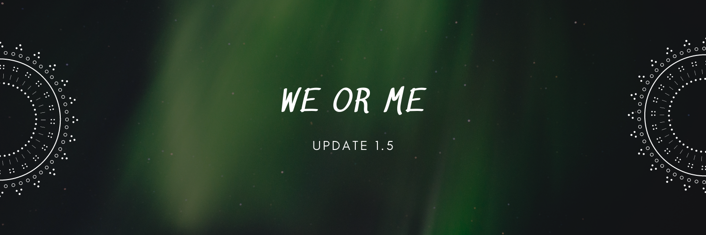

My Blog
Chào mừng đến với blog của

Ngoc 21, Ha Noi.
Chỉ tôi, bản thân tôi và tôi, khám phá thế giới và vũ trụ vô định. Tôi có một trái tim nóng của tình yêu, một cái đầu đã lạnh dần của trải nghiệm và một niềm đam mê cháy bỏng với lập trình. Tôi muốn chia sẻ những điều đó, chia sẻ thế giới của tôi với bạn.
Photo Blog
November 2, 2021
VTV và 10 năm Spacespeakers
Ngày 30/10/2021 kỉ niệm 10 năm thành lập SpaceSpeakers, một công ty giải trí với hoạt động chính bao gồm sản xuất âm nhạc, phát hành các sản phẩm âm nhạc mang dấu ấn riêng của SS. Và khi biết SS được VTV mời đến chương trình Cuộc hẹn cuối tuần với 3 khách mời đại diện cho SS là Binz, Soobin, Rhymastic, mình thực sự quá bất ngờ và háo hức, thậm chí hơi kích thích.
Nhớ từ những ngày đầu Rap/Hiphop được nuôi lớn từ những bản nhạc Pop, nhớ những Thu Cuối, Nothing in your eyes, Rời,.. Ban đầu chỉ là những trang sức của một bản nhạc nhưng giờ đây nó đã đủ lớn, đủ sức để đứng riêng mình nó trong một tác phẩm. Đặc biệt sau Rap Việt và King of rap, ta lại càng thấy được Rap/Hiphop đang phát triển và có chỗ đứng như thế nào đối với âm nhạc đương đại. Từ thời điểm tưởng như Underground đã thoái trào ở Việt Nam thì SS đã được thành lập và thổi một luồng gió mới vào thị trường nhạc Việt thời điểm đấy. Không quá khi nói rằng SS đã góp phần không nhỏ vực dậy và đưa Rap/Hiphop phát triển đến như bây giờ ở tại Việt Nam. 10 năm qua SS đã phát triển cả về tập thể lẫn từng cá nhân trong đó, với cá nhân mình thấy thực sự SS phát triển được như thời điểm hiện tại chính là vì sở hữu những con người thực sự quá chất lượng. Ban đầu chỉ là nhóm những người anh em chơi thân với nhau, rồi đến thành lập công ty và phát triển một cách nghiêm túc. Với mình thấy rằng SS đang có những con người có thể nói là tốt nhất hoặc không cũng là top đầu trong từng vị trí của âm nhạc đương đại Việt Nam ở thời điểm hiện tại. Anh Hoàng Touliver, SlimV (anh Vịnh) đều là những nhà sản xuất âm nhạc đỉnh cao của Việt Nam, Touliver nhúng tay quá nhiều vào những bản hit của Vpop, dù là bản nhạc buồn hay vui thì beat của Touliver vẫn quá cuốn; tất cả các beat của King of rap hay nghe nhạc của Tóc Tiên, cũng chính là người vợ của anh, thì chắc là ai cũng thấy rồi, mọi người hay nói Touliver là phù thủy âm nhạc quả không sai. Còn SlimV thì đúng là bách khoa toàn thư về âm nhạc, am hiểu từ đông sang tây, từng thể loại, từng nốt nhạc khó nhất. The Playah chính là minh chứng rõ nét nhất ở thời điểm hiện tại về tài năng của SlimV, sản phẩm được kết hợp bởi SlimV và Soobin có thể nói là siêu phẩm hiếm có của nhạc Việt, tuyệt vời từ mọi phương diện nghe nhìn, chạm được đến trái tim người nghe. Mình chưa thấy bài hát nào có sức ảnh hưởng trên cộng đồng thế giới nhiều như thế; quá nhiều reaction của người nước ngoài, nhiều nhất trong những bài nhạc Việt mà mình biết. Lướt bình luận trên Youtube thì không có lấy nổi một lời chê nào mà chỉ thấy khen ngợi hết lời, thực sự không thể chê nổi. Kết hợp pop, R&B, pop funky, jazz, balad, hơi hướng giao hưởng tưởng trừng kén người nghe nhưng dưới bàn tay của SlimV thì đúng là không thể tin nổi. Rồi Kiên Ứng (anh Ứng Duy Kiên) đạo diễn âm nhạc, đạo diễn hình cũng chính là đạo diễn của The Playah. Những Soobin, Binz, Rhymastic, JustaTee, Kimmese, ... đều là những con người quá tài năng.
Quay trở lại với VTV Cuộc hẹn cuối tuần, mình thực sự rất tiếc khi không thể xem trực tiếp chương trình vì vào đúng thời điểm mình phải báo cáo cuối kì lúc 20h00. Đến hôm sau mình mới có thể ngồi bình tĩnh xem lại chương trình và đúng là hơn 1 tiếng đồng hồ không làm mình thất vọng cho sự tò mò, háo hức dâng trào. Nói lại một chút thì gần đây VTV đã sản xuất một chương trình đó là Dọn rác trên không gian mạng, nói về những hành xử, phát ngôn lệnh chuẩn của một bộ phận người sử dụng mạng xã hội kể cả những nghệ sĩ, những người có ảnh hưởng đến cộng đồng. Trong chương trình có chỉ đích danh Rhymastic với bài rap Tượng. Nói cho những ai không biết thì Tượng là bài rap mà Rhymastic dùng để dizz (thể loại công kích nhau bằng rap) rapper Torai9, lí do của trận dizz mình không đề cập ở đây. Thời điểm chương trình đó được phát, có rất nhiều luồng ý kiến nổ ra trên mạng xã hội ngay buổi tối mà chương trình được công chiếu. Lúc đó thực sự mình cảm thấy rất khó xử và không biết làm thế nào cả, VTV và Rhymastic cả hai mình đều rất yêu thích, mình cũng đã comment trên một page nói về quan điểm của mình lúc đó. Mình biết VTV làm đúng, nhưng mình biết Rhymastic chắc chắn không phải là một cái gì đó xấu xí để xếp cùng những thứ rác trên không gian mạng kia và trên phương diện dizz thì Rhymastic đã quá văn minh rồi. Nhưng mọi luồng suy nghĩ lúc đó thật sự vẫn như đang đánh nhau lẫn lộn trong đầu mình vậy. Nhưng cho tới ngày hôm nay, cho tới khi Cuộc hẹn cuối tuần cùng SS, mình đã hiểu ra mọi thứ và thực sự cởi bỏ được mâu thuẫn trong suy nghĩ. VTV thì chắc không phải nói rồi, quá quyền lực và sức ảnh hưởng của nó quá lớn. VTV nhân dịp 10 năm thành lập SS đã mời Binz, Soobin và Rhymastic như một sự công nhận về thành công, sức ảnh hưởng và những đóng góp của SS đối với nền âm nhạc Việt Nam. VTV trong cuộc trò chuyện vô cùng thân mật với 3 thành viên của SS như để khẳng định thêm về tài năng và niềm đam mê của từng thành viên của SS. Và điều quan trọng nhất mình đã nhận ra đó chính là VTV sẵn sàng giới thiệu, quảng bá cho SS nói riêng và rộng ra là những nghệ sĩ Underground được công nhận một cách chính thức, có một chỗ đứng chính thống trong nền nghệ thuật âm nhạc đương đại Việt Nam; nhưng khi bạn đã là một nghệ sĩ thực thụ, một người có sức ảnh hưởng thì bạn phải có trách nhiệm với những gì bản thân làm chứ không thể theo một cách tùy tiện như trong Underground. Bạn có thể làm sai trong quá khứ nhưng không có nghĩa là những thành công, tài năng và sự cố gắng của bạn ở hiện tại bị từ chối. Mình chắc chắn rằng Rhymastic, SS cũng như những nghệ sĩ khác sau chương trình này đều hiểu ra mục đích thực sự mà VTV muốn làm, muốn gửi gắm đến những người làm nghệ thuật, những người có tầm ảnh hưởng ở bất cứ lĩnh vực nào.
Kết thúc chương trình bằng một bản live mashup quá hay của cả 3. Cho Mình Em - Daydreams - Treasure, những bài hát đã lâu nhưng đều là những bài hát quá hay gắn liền với từng người. Mình đã từng nói Rhymastic có tư duy viết nhạc có một không hai ở Việt Nam, từng câu từng chữ đều ẩn chứa quá nhiều điều ẩn dụ sâu sắc nhưng không hề cứng nhắc mà ngược lại luôn là một bức tranh âm nhạc màu sắc chuyển động được trong đầu người nghe; Treasure của Rhymastic, bài hát mà Rhymastic viết cho người con gái mình yêu, là một trong số đó, bài hát mình rất yêu thích và đến giờ vẫn hay nghe mặc dù đã 4 năm rồi. Daydreams của Soobin gợi lại cho mình về Soobin của thời Phía sau một cô gái, Vụt tan,... một Soobin quán quân V-KPop, thời mọi người gọi là hoàng tử Balad, hồi đó mình còn mới học cấp 2 thôi đã nghiện giọng hát của Soobin rồi, live như nuốt đĩa. Đến đoạn Cho Mình Em của Binz thì không còn gì để nói, lâu lắm mới được nghe lại Binz thời của những bài hát thơ mộng như Deepsea, Sofar,...; nghe những câu chuyện tình thật của Binz qua những câu rap, mà có phải rap không? Đúng là Xuân Diệu của rap Việt, nó như những bài thơ tình vậy, nghe đúng là muốn khóc. Một bản mashup có cả 3 phiên bản mình thích nhất của từng người, quá tuyệt vời.
Thật tiếc nếu như ai đó đã bỏ lỡ hơn 1 tiếng đồng hồ không thể rời mắt khỏi màn hình, các bạn có thể xem full tại đây nhé. Chương trình quá tuyệt vời, quá hấp dẫn từ phần mở đầu đến khi kết thúc. Một lần nữa cảm ơn Cuộc hẹn cuối tuần, VTV cùng Binz, Rhymastic, Soobin và host Quốc Khánh đã mang đến một chương trình tuyệt vời. Chúc cho VTV, chúc cho SS ngày càng phát triển, mang đến những sản phẩm hay hơn nữa. Respect VTV. Respect SpaceSpeakers!!!
Nhớ từ những ngày đầu Rap/Hiphop được nuôi lớn từ những bản nhạc Pop, nhớ những Thu Cuối, Nothing in your eyes, Rời,.. Ban đầu chỉ là những trang sức của một bản nhạc nhưng giờ đây nó đã đủ lớn, đủ sức để đứng riêng mình nó trong một tác phẩm. Đặc biệt sau Rap Việt và King of rap, ta lại càng thấy được Rap/Hiphop đang phát triển và có chỗ đứng như thế nào đối với âm nhạc đương đại. Từ thời điểm tưởng như Underground đã thoái trào ở Việt Nam thì SS đã được thành lập và thổi một luồng gió mới vào thị trường nhạc Việt thời điểm đấy. Không quá khi nói rằng SS đã góp phần không nhỏ vực dậy và đưa Rap/Hiphop phát triển đến như bây giờ ở tại Việt Nam. 10 năm qua SS đã phát triển cả về tập thể lẫn từng cá nhân trong đó, với cá nhân mình thấy thực sự SS phát triển được như thời điểm hiện tại chính là vì sở hữu những con người thực sự quá chất lượng. Ban đầu chỉ là nhóm những người anh em chơi thân với nhau, rồi đến thành lập công ty và phát triển một cách nghiêm túc. Với mình thấy rằng SS đang có những con người có thể nói là tốt nhất hoặc không cũng là top đầu trong từng vị trí của âm nhạc đương đại Việt Nam ở thời điểm hiện tại. Anh Hoàng Touliver, SlimV (anh Vịnh) đều là những nhà sản xuất âm nhạc đỉnh cao của Việt Nam, Touliver nhúng tay quá nhiều vào những bản hit của Vpop, dù là bản nhạc buồn hay vui thì beat của Touliver vẫn quá cuốn; tất cả các beat của King of rap hay nghe nhạc của Tóc Tiên, cũng chính là người vợ của anh, thì chắc là ai cũng thấy rồi, mọi người hay nói Touliver là phù thủy âm nhạc quả không sai. Còn SlimV thì đúng là bách khoa toàn thư về âm nhạc, am hiểu từ đông sang tây, từng thể loại, từng nốt nhạc khó nhất. The Playah chính là minh chứng rõ nét nhất ở thời điểm hiện tại về tài năng của SlimV, sản phẩm được kết hợp bởi SlimV và Soobin có thể nói là siêu phẩm hiếm có của nhạc Việt, tuyệt vời từ mọi phương diện nghe nhìn, chạm được đến trái tim người nghe. Mình chưa thấy bài hát nào có sức ảnh hưởng trên cộng đồng thế giới nhiều như thế; quá nhiều reaction của người nước ngoài, nhiều nhất trong những bài nhạc Việt mà mình biết. Lướt bình luận trên Youtube thì không có lấy nổi một lời chê nào mà chỉ thấy khen ngợi hết lời, thực sự không thể chê nổi. Kết hợp pop, R&B, pop funky, jazz, balad, hơi hướng giao hưởng tưởng trừng kén người nghe nhưng dưới bàn tay của SlimV thì đúng là không thể tin nổi. Rồi Kiên Ứng (anh Ứng Duy Kiên) đạo diễn âm nhạc, đạo diễn hình cũng chính là đạo diễn của The Playah. Những Soobin, Binz, Rhymastic, JustaTee, Kimmese, ... đều là những con người quá tài năng.
Quay trở lại với VTV Cuộc hẹn cuối tuần, mình thực sự rất tiếc khi không thể xem trực tiếp chương trình vì vào đúng thời điểm mình phải báo cáo cuối kì lúc 20h00. Đến hôm sau mình mới có thể ngồi bình tĩnh xem lại chương trình và đúng là hơn 1 tiếng đồng hồ không làm mình thất vọng cho sự tò mò, háo hức dâng trào. Nói lại một chút thì gần đây VTV đã sản xuất một chương trình đó là Dọn rác trên không gian mạng, nói về những hành xử, phát ngôn lệnh chuẩn của một bộ phận người sử dụng mạng xã hội kể cả những nghệ sĩ, những người có ảnh hưởng đến cộng đồng. Trong chương trình có chỉ đích danh Rhymastic với bài rap Tượng. Nói cho những ai không biết thì Tượng là bài rap mà Rhymastic dùng để dizz (thể loại công kích nhau bằng rap) rapper Torai9, lí do của trận dizz mình không đề cập ở đây. Thời điểm chương trình đó được phát, có rất nhiều luồng ý kiến nổ ra trên mạng xã hội ngay buổi tối mà chương trình được công chiếu. Lúc đó thực sự mình cảm thấy rất khó xử và không biết làm thế nào cả, VTV và Rhymastic cả hai mình đều rất yêu thích, mình cũng đã comment trên một page nói về quan điểm của mình lúc đó. Mình biết VTV làm đúng, nhưng mình biết Rhymastic chắc chắn không phải là một cái gì đó xấu xí để xếp cùng những thứ rác trên không gian mạng kia và trên phương diện dizz thì Rhymastic đã quá văn minh rồi. Nhưng mọi luồng suy nghĩ lúc đó thật sự vẫn như đang đánh nhau lẫn lộn trong đầu mình vậy. Nhưng cho tới ngày hôm nay, cho tới khi Cuộc hẹn cuối tuần cùng SS, mình đã hiểu ra mọi thứ và thực sự cởi bỏ được mâu thuẫn trong suy nghĩ. VTV thì chắc không phải nói rồi, quá quyền lực và sức ảnh hưởng của nó quá lớn. VTV nhân dịp 10 năm thành lập SS đã mời Binz, Soobin và Rhymastic như một sự công nhận về thành công, sức ảnh hưởng và những đóng góp của SS đối với nền âm nhạc Việt Nam. VTV trong cuộc trò chuyện vô cùng thân mật với 3 thành viên của SS như để khẳng định thêm về tài năng và niềm đam mê của từng thành viên của SS. Và điều quan trọng nhất mình đã nhận ra đó chính là VTV sẵn sàng giới thiệu, quảng bá cho SS nói riêng và rộng ra là những nghệ sĩ Underground được công nhận một cách chính thức, có một chỗ đứng chính thống trong nền nghệ thuật âm nhạc đương đại Việt Nam; nhưng khi bạn đã là một nghệ sĩ thực thụ, một người có sức ảnh hưởng thì bạn phải có trách nhiệm với những gì bản thân làm chứ không thể theo một cách tùy tiện như trong Underground. Bạn có thể làm sai trong quá khứ nhưng không có nghĩa là những thành công, tài năng và sự cố gắng của bạn ở hiện tại bị từ chối. Mình chắc chắn rằng Rhymastic, SS cũng như những nghệ sĩ khác sau chương trình này đều hiểu ra mục đích thực sự mà VTV muốn làm, muốn gửi gắm đến những người làm nghệ thuật, những người có tầm ảnh hưởng ở bất cứ lĩnh vực nào.
Kết thúc chương trình bằng một bản live mashup quá hay của cả 3. Cho Mình Em - Daydreams - Treasure, những bài hát đã lâu nhưng đều là những bài hát quá hay gắn liền với từng người. Mình đã từng nói Rhymastic có tư duy viết nhạc có một không hai ở Việt Nam, từng câu từng chữ đều ẩn chứa quá nhiều điều ẩn dụ sâu sắc nhưng không hề cứng nhắc mà ngược lại luôn là một bức tranh âm nhạc màu sắc chuyển động được trong đầu người nghe; Treasure của Rhymastic, bài hát mà Rhymastic viết cho người con gái mình yêu, là một trong số đó, bài hát mình rất yêu thích và đến giờ vẫn hay nghe mặc dù đã 4 năm rồi. Daydreams của Soobin gợi lại cho mình về Soobin của thời Phía sau một cô gái, Vụt tan,... một Soobin quán quân V-KPop, thời mọi người gọi là hoàng tử Balad, hồi đó mình còn mới học cấp 2 thôi đã nghiện giọng hát của Soobin rồi, live như nuốt đĩa. Đến đoạn Cho Mình Em của Binz thì không còn gì để nói, lâu lắm mới được nghe lại Binz thời của những bài hát thơ mộng như Deepsea, Sofar,...; nghe những câu chuyện tình thật của Binz qua những câu rap, mà có phải rap không? Đúng là Xuân Diệu của rap Việt, nó như những bài thơ tình vậy, nghe đúng là muốn khóc. Một bản mashup có cả 3 phiên bản mình thích nhất của từng người, quá tuyệt vời.
Thật tiếc nếu như ai đó đã bỏ lỡ hơn 1 tiếng đồng hồ không thể rời mắt khỏi màn hình, các bạn có thể xem full tại đây nhé. Chương trình quá tuyệt vời, quá hấp dẫn từ phần mở đầu đến khi kết thúc. Một lần nữa cảm ơn Cuộc hẹn cuối tuần, VTV cùng Binz, Rhymastic, Soobin và host Quốc Khánh đã mang đến một chương trình tuyệt vời. Chúc cho VTV, chúc cho SS ngày càng phát triển, mang đến những sản phẩm hay hơn nữa. Respect VTV. Respect SpaceSpeakers!!!
Yêu thích

November 11, 2021
Yêu thích
November 15, 2021
Yêu thích
November 16, 2021
Chào các bạn, hôm nay chúng ta sẽ chuyển chủ đề để thay đổi không khí nhé. Chỉ vài tiếng đồng hồ nữa thôi thì trận đấu giữa đội tuyển Việt Nam và Saudi Arabia trong khuôn khổ lượt về vòng loại cuối cùng WC 2022 sẽ diễn ra trên sân Mỹ Đình - sân nhà của chúng ta. Nói qua một chút về những gì đã trải qua ở vòng loại cuối cùng để có tấm vé đi WC này nhỉ. Đối với mình là một người có thể nói là khá lạc quan trong cuộc sống và thể thao - một trong những đam mê của mình cũng vậy. Mình hiểu đây là vòng loại cuối cùng, những đội vào đây chẳng có ai là yếu cả. Dù lạc quan nhưng mình cũng rất thực tế, mình nhận ra chắc chắn một điều rằng Việt Nam chắc chắn chưa đủ lực để có thể cạnh tranh tấm vé đi WC vào lúc này, dù có cố để được là đội xếp thứ 3 trong bảng đấu có 6 đội nhằm dành vé đá playoff để tranh chiếc vé vớt thì mình cũng thấy đó là điều không tưởng. Vì sao lại như vậy, đơn giản thôi, mình nhìn vào thực tế, chúng ta lần đầu tiên được vào vòng loại cuối cùng này; là một đội bóng đang trên đà phát triển nhưng vẫn còn nhiều hạn chế; là đội mà so với bất cứ đội bóng nào trong vòng loại cuối cùng này đều là chiếu dưới; là áp lực và sự bỡ ngỡ của lần đầu được thi đấu với những đội bóng hàng đầu châu lục, những cầu thủ đẳng cấp đang thi đấu ở những giải bóng đá hàng đầu thế giới. Với mình, chúng ta vào được đây đã là vui lắm rồi và mình chỉ hy vọng với trình độ và phong độ hiện tại chúng ta sẽ có kết quả khả quan. Nhưng đến khi vào sân mới thấy khó khăn biết nhường nào, kiếm 1 điểm ở vòng loại cuối cùng khó khăn như thế nào, thi đấu có var lạ lẫm như thế nào...Qua 5 trận đấu lượt đi chúng ta chưa có nổi 1 điểm số nào nhưng có thể thấy đội tuyển đã thu về vô vàn những kinh nghiệm quý báu mà bình thường rất khó có được. Quay trở về gần hơn trận đấu vừa rồi với Nhật Bản, mình đã thấy được sự tiến bộ của cả đội tuyển, chúng ta thua nhưng ai cũng khá hài lòng về màn trình diễn của cả đội. Đó là điều tuyệt vời mà chúng ta nhận được sau những trận đấu khó khăn, nhưng có một điều mà những ai tinh ý hoặc theo dõi đội tuyển nhiều cũng nhận ra được, một nốt trầm, nốt trầm mang tên Phan Văn Đức. Đó cũng là chủ đề mà mình muốn nói ngày hôm nay.
PHAN VĂN ĐỨC VÀ SỰ KIÊN NHẪN CUỐI CÙNG?
Thất bại 0-1 trước Nhật Bản tối ngày 11/11 không phải là màn trình diễn tồi của ĐTVN như mình nói. Trước đối thủ hơn hẳn về đẳng cấp, đội tuyển đã chơi khá sòng phẳng và không phải không có những cơ hội. Nếu như cách trả lời họp báo sau trận của ông Park khiến người ta thấy những áp lực, thấy cả sự mệt mỏi, thì trong việc dùng người trên sân, người mình thấy một tia kiên nhẫn cuối cùng bị gạt bỏ - tia kiên nhẫn với Phan Văn Đức.
ĐỨC CỌT LÀ AI?
Giờ mà hỏi câu này có lẽ quá thừa. Nhưng sát thời điểm lên đường tới Thường Châu năm 2018, thậm chí chính ông Park cũng không biết rõ Đức cọt là ai và chính bản thân mình cũng vậy. Và rồi sau đó chỉ có 2-3 ngày để xem giò cẳng cầu thủ này trước khi quyết định book vé cho Đức đi cùng đội. Phần còn lại là lịch sử với bàn thắng vào lưới U23 Iraq mà chắc nhiều người vẫn chưa thể quên!
Nói không ngoa, 2018 là năm Văn Đức bước ra ánh sáng – từ một cầu thủ trẻ tiềm năng thành một ngôi sao của ĐTVN. Lần lượt ở ASIAD và AFF Cup cũng trong năm đó, tiền vệ này đóng góp 3 bàn thắng tạo nên những dấu mốc lịch sử cho bóng đá nước nhà.
NHƯNG SAU 2018 LÀ GÌ? Sau 2018 dĩ nhiên là 2019, nhưng với Đức cọt, đó là một con số 0 tròn trĩnh ở cấp độ ĐTQG. Suốt 815 phút góp mặt ở 14 trận đấu trong suốt 3 năm qua, Văn Đức không có nổi 1 bàn thắng. Thậm chí suốt từ đầu năm 2021 tới trước trận gặp Nhật Bản, màn trình diễn của Đức nhạt nhoà tới mức khiến ông Park bị mang tiếng bảo thủ vì luôn ưu ái cho cầu thủ này ra sân. Đáng thất vọng như vậy, nhưng ông Park và các trợ lý rất kiên nhẫn với cá nhân Văn Đức. Trong 14 trận kể trên, có tới 11 trận Đức đá chính nhưng có tới 12 lần bị thay ra giữa chừng. Thống kê không sai đâu, và gần nhất là trận gặp Nhật Bản, Đức vào sân từ băng ghế dự bị ở phút 46 nhưng cuối cùng cũng bị thay ra ở phút 84.
Vậy lý do là gì?
“Đức không bắt nhịp được với trận đấu. Chuyền bóng hỏng quá nhiều. Những pha chuyển trạng thái từ phòng ngự sang tấn công vốn là thương hiệu của Đức không còn nữa, những pha phát động bóng gây đột biến cũng mất đi!” – những đánh giá không ai nghĩ dành cho một cầu thủ như Văn Đức!
CẦU THỦ CẦN ÁP LỰC ĐỂ TIẾN BỘ!
Một cái cây chỉ có thể thành đại thụ nếu rễ cắm đủ sâu và luôn vươn mình ra ánh sáng. Nếu chỉ sống dưới bóng mát chỉ có thể là những nhánh cây bụi mà thôi. Mình nghĩ không chỉ cầu thủ nói riêng mà chính là những con người chúng ta, luôn cần áp lực để thay đổi, để tiến bộ.
Với bóng đá, trừ một số trường hợp ngoại lệ hiếm hoi, bóng đá chuyên nghiệp luôn ưu tiên phong độ của cầu thủ. Việc mặc định được ra sân hay mặc định có suất trên ĐTQG, không chỉ khiến triệt tiêu tính cạnh tranh giữa các cầu thủ, mà còn khiến người được ưu ái mất đi động lực để cố gắng.
Việc tung Văn Đức vào rồi thay ra trong trận gặp Nhật Bản vừa rồi có thể là dấu hiệu cho thấy HLV Park Hang Seo đã mất kiên nhẫn với cầu thủ này. Sẽ là một quãng thời gian khó khăn, và áp lực cho tiền vệ người Nghệ An để lấy lại phong độ, lấy lại niềm tin nơi người hâm mộ và cả người thầy của mình.
Bản thân mình cũng là người đã từng rơi vào tình cảnh chơ vơ, bất lực, mất định hướng, mất đi những phẩm chất tốt nhất vốn có của bản thân. Mình rất hiểu và thương Phan Văn Đức ở thời điểm hiện tại. Thực sự con đường tìm lại nó không hề dễ dàng một chút nào. Có những lúc bản thân chẳng có một ai bên cạnh, dù chỉ là một lời động viên cũng chẳng có, xung quanh mình chỉ thấy những áp lực dồn dập và những hoài nghi. Nhưng mình vẫn phải đi qua nó một cách mạnh mẽ không phải để chứng minh rằng mình chẳng cần ai bên cạnh, mà đơn giản chỉ là tìm lại bản thân, chiến thắng chính bản thân mình.
Văn Đức sau trận đấu với Nhật Bản nhận rất nhiều chỉ trích không chỉ từ báo chí mà còn là người hâm mộ, đến mức thậm chí vợ Đức cọt đã phải lên tiếng trên mạng xã hội để bảo vệ chồng mình.
Gia đình, vợ và con, mọi người vẫn luôn ở bên cạnh Đức. Đó là điều tuyệt vời nhất. Và với phẩm chất của người con xứ Nghệ mình nghĩ không có lí do gì Đức lại không thể làm được cả? Là kim cương hay chỉ là viên ngọc thô? Là đại thụ hay chỉ đám cây bụi tầm thường? Tất cả phụ thuộc vào thái độ và phản ứng của Văn Đức!
Trận đấu tối nay sẽ rất mong chờ, không chỉ với đội tuyển mà với cá nhân Văn Đức, sự thay đổi không thể ngày một ngày hai, nhưng điều quan trọng chính là thái độ của Đức sẽ ra sao và cơ hội ông Park có thể trao cho Văn Đức trong trận đấu ngày hôm nay sau 5 ngày tập luyện vừa qua hay không? Đó mới là điều quan trọng.
PHAN VĂN ĐỨC VÀ SỰ KIÊN NHẪN CUỐI CÙNG?
Thất bại 0-1 trước Nhật Bản tối ngày 11/11 không phải là màn trình diễn tồi của ĐTVN như mình nói. Trước đối thủ hơn hẳn về đẳng cấp, đội tuyển đã chơi khá sòng phẳng và không phải không có những cơ hội. Nếu như cách trả lời họp báo sau trận của ông Park khiến người ta thấy những áp lực, thấy cả sự mệt mỏi, thì trong việc dùng người trên sân, người mình thấy một tia kiên nhẫn cuối cùng bị gạt bỏ - tia kiên nhẫn với Phan Văn Đức.
ĐỨC CỌT LÀ AI?
Giờ mà hỏi câu này có lẽ quá thừa. Nhưng sát thời điểm lên đường tới Thường Châu năm 2018, thậm chí chính ông Park cũng không biết rõ Đức cọt là ai và chính bản thân mình cũng vậy. Và rồi sau đó chỉ có 2-3 ngày để xem giò cẳng cầu thủ này trước khi quyết định book vé cho Đức đi cùng đội. Phần còn lại là lịch sử với bàn thắng vào lưới U23 Iraq mà chắc nhiều người vẫn chưa thể quên!
Nói không ngoa, 2018 là năm Văn Đức bước ra ánh sáng – từ một cầu thủ trẻ tiềm năng thành một ngôi sao của ĐTVN. Lần lượt ở ASIAD và AFF Cup cũng trong năm đó, tiền vệ này đóng góp 3 bàn thắng tạo nên những dấu mốc lịch sử cho bóng đá nước nhà.
NHƯNG SAU 2018 LÀ GÌ? Sau 2018 dĩ nhiên là 2019, nhưng với Đức cọt, đó là một con số 0 tròn trĩnh ở cấp độ ĐTQG. Suốt 815 phút góp mặt ở 14 trận đấu trong suốt 3 năm qua, Văn Đức không có nổi 1 bàn thắng. Thậm chí suốt từ đầu năm 2021 tới trước trận gặp Nhật Bản, màn trình diễn của Đức nhạt nhoà tới mức khiến ông Park bị mang tiếng bảo thủ vì luôn ưu ái cho cầu thủ này ra sân. Đáng thất vọng như vậy, nhưng ông Park và các trợ lý rất kiên nhẫn với cá nhân Văn Đức. Trong 14 trận kể trên, có tới 11 trận Đức đá chính nhưng có tới 12 lần bị thay ra giữa chừng. Thống kê không sai đâu, và gần nhất là trận gặp Nhật Bản, Đức vào sân từ băng ghế dự bị ở phút 46 nhưng cuối cùng cũng bị thay ra ở phút 84.
Vậy lý do là gì?
“Đức không bắt nhịp được với trận đấu. Chuyền bóng hỏng quá nhiều. Những pha chuyển trạng thái từ phòng ngự sang tấn công vốn là thương hiệu của Đức không còn nữa, những pha phát động bóng gây đột biến cũng mất đi!” – những đánh giá không ai nghĩ dành cho một cầu thủ như Văn Đức!
CẦU THỦ CẦN ÁP LỰC ĐỂ TIẾN BỘ!
Một cái cây chỉ có thể thành đại thụ nếu rễ cắm đủ sâu và luôn vươn mình ra ánh sáng. Nếu chỉ sống dưới bóng mát chỉ có thể là những nhánh cây bụi mà thôi. Mình nghĩ không chỉ cầu thủ nói riêng mà chính là những con người chúng ta, luôn cần áp lực để thay đổi, để tiến bộ.
Với bóng đá, trừ một số trường hợp ngoại lệ hiếm hoi, bóng đá chuyên nghiệp luôn ưu tiên phong độ của cầu thủ. Việc mặc định được ra sân hay mặc định có suất trên ĐTQG, không chỉ khiến triệt tiêu tính cạnh tranh giữa các cầu thủ, mà còn khiến người được ưu ái mất đi động lực để cố gắng.
Việc tung Văn Đức vào rồi thay ra trong trận gặp Nhật Bản vừa rồi có thể là dấu hiệu cho thấy HLV Park Hang Seo đã mất kiên nhẫn với cầu thủ này. Sẽ là một quãng thời gian khó khăn, và áp lực cho tiền vệ người Nghệ An để lấy lại phong độ, lấy lại niềm tin nơi người hâm mộ và cả người thầy của mình.
Bản thân mình cũng là người đã từng rơi vào tình cảnh chơ vơ, bất lực, mất định hướng, mất đi những phẩm chất tốt nhất vốn có của bản thân. Mình rất hiểu và thương Phan Văn Đức ở thời điểm hiện tại. Thực sự con đường tìm lại nó không hề dễ dàng một chút nào. Có những lúc bản thân chẳng có một ai bên cạnh, dù chỉ là một lời động viên cũng chẳng có, xung quanh mình chỉ thấy những áp lực dồn dập và những hoài nghi. Nhưng mình vẫn phải đi qua nó một cách mạnh mẽ không phải để chứng minh rằng mình chẳng cần ai bên cạnh, mà đơn giản chỉ là tìm lại bản thân, chiến thắng chính bản thân mình.
Văn Đức sau trận đấu với Nhật Bản nhận rất nhiều chỉ trích không chỉ từ báo chí mà còn là người hâm mộ, đến mức thậm chí vợ Đức cọt đã phải lên tiếng trên mạng xã hội để bảo vệ chồng mình.
Gia đình, vợ và con, mọi người vẫn luôn ở bên cạnh Đức. Đó là điều tuyệt vời nhất. Và với phẩm chất của người con xứ Nghệ mình nghĩ không có lí do gì Đức lại không thể làm được cả? Là kim cương hay chỉ là viên ngọc thô? Là đại thụ hay chỉ đám cây bụi tầm thường? Tất cả phụ thuộc vào thái độ và phản ứng của Văn Đức!
Trận đấu tối nay sẽ rất mong chờ, không chỉ với đội tuyển mà với cá nhân Văn Đức, sự thay đổi không thể ngày một ngày hai, nhưng điều quan trọng chính là thái độ của Đức sẽ ra sao và cơ hội ông Park có thể trao cho Văn Đức trong trận đấu ngày hôm nay sau 5 ngày tập luyện vừa qua hay không? Đó mới là điều quan trọng.
Yêu thích
November 22, 2021
E G O
Chào mọi người. Đêm lạnh rồi nhỉ, còn ai đang thức cùng WOM lúc này không?. Hôm nay mình muốn nghỉ muộn hơn mọi ngày một chút, nghĩ nhiều hơn một chút. Bình thường vào giờ này mình hay nằm và suy nghĩ về những chuyện riêng của bản thân ấy. Màn đêm tĩnh mịch, kết thúc một ngày hoạt động là khoảng thời gian mình thích nhất để suy nghĩ về mọi thứ mà bản thân muốn. Nó yên tĩnh hơn, bản thân mình bình tâm hơn và cảm xúc ở trạng thái tốt nhất.
Hôm qua mình nghe thấy bố mẹ nói chuyện với nhau, chính xác là sau một vài ngày không nói chuyện với nhau. Hai người giận nhau về một chuyện chẳng to tát một chút nào, mình biết rõ chuyện đó, mình biết rõ bố mẹ giận nhau trong vài ngày qua. Mình không hề bất ngờ vì những chuyện này, mâu thuẫn hay giận hờn đều là những thứ không thể tránh khỏi trong cuộc sống ở bất cứ đâu, mối quan hệ nào hay ở độ tuổi nào cũng vậy. Mình cũng chẳng bất ngờ khi những mâu thuẫn xảy ra từ những điều nhỏ nhất, chẳng nhiều người để ý đến nhất. Cái mình quan tâm chính là cách giải quyết những mâu thuẫn, những giận hờn đó ra sao.
Thấy hai người như vậy mình có buồn không? Có chứ, mình cũng buồn, nhưng không phải nỗi buồn sầu bi thảm thiết; buồn như vậy không giúp mình giải quyết được vấn đề; buồn như vậy không giúp mình làm mọi thứ trở nên tốt hơn. Mình buồn vì bố mẹ không tìm được ra cách giải quyết tốt hơn, mình buồn vì bố mẹ không ở một thế hệ mới hơn để có những cách tiếp cận vấn đề thoải mái hơn, buồn vì họ không thể vừa là người trong cuộc vừa là mình để thấy mọi thứ không hề tệ vậy, mình buồn vì tất cả những điều tiếc nuối kia.
Cách giải quyết hụt hẫng?
Bắt đầu bằng việc im lặng của hai người như một thông báo ngầm rằng mọi quan điểm đang rất trái ngược nhau. Một phản xạ khá tự nhiên và dễ hiểu đúng không?. Nhưng rồi sau đó thì sao, vẫn là một sự im lặng đến từ cả hai, và dần dần vấn đề không còn nằm ở mâu thuẫn kia nữa mà nó đã chuyển sang lòng giận hờn vì im lặng. Đến ngày thứ 5, mình thấy bố gửi cho mẹ một bài viết gì đó xem trên mạng liên quan đến mâu thuẫn mà họ đang gặp phải và vẫn giữ sự im lặng để hòng thay đổi cục diện. Nhưng khá đáng tiếc, cách tiếp cận đó với mình thấy rằng quá cũ và không còn phù hợp ở thời điểm hiện tại, thậm chí còn đẩy mâu thuẫn lớn thêm, nhưng trách làm sao được khi thế hệ của hai người chưa thể biết hoặc làm quen với những điều mới hơn, bố mẹ chúng ta hầu hết đều là những người theo lối suy nghĩ cũ mà, mình rất hiểu và tiếc cho họ. Và cũng đúng như mình dự đoán, mọi thứ vẫn chưa được giải quyết hay khả quan hơn. Đến hôm nay, mình thấy bố đã chủ động vào gặp mẹ để nói chuyện, để mở lời. Mình thầm gật gù vì đây chính là điều mà mình hướng đến và nhận ra đó mới là cách hiệu quả nhất. Nhưng mình đã quên mất rằng còn một điều rất quan trọng trong một cuộc giải quyết mâu thuẫn mà bản thân mình đã nhận ra nó trong một khoảng thời gian dài vừa qua. Hai người bắt đầu nói chuyện, bắt đầu giải thích về những lí lẽ của mình, về những điều họ cho là đúng đắn của bản thân họ và những cái sai của đối phương nhằm cho họ hiểu ra vấn đề. Ai cũng muốn bảo vệ quan điểm của bản thân tới cùng và không quan tâm đến cục diện đang diễn ra. Họ tranh nhau nói, nói đè lên nhau và mọi thứ cứ lặp đi lặp lại như vậy cho đến khi mệt mỏi.
Cái tôi có thể giết chết những năng lượng tích cực trong một mối quan hệ?
Các bạn đã bao giờ đo xem cái tôi của bản thân lớn đến đâu chưa?. Đã bao giờ dùng cái tôi của mình để giải quyết một vấn đề chưa?. Các bạn thấy nó ra sao? Mình một người có cái tôi rất lớn, nhưng chẳng bao giờ mình thể hiện nó một cách rõ ràng ra ngoài cả, và chính vì vậy nên mình luôn luôn không đo được nó, không cảm nhận chính xác rằng nó đang ở đâu và đôi khi bản thân ảo tưởng rằng nó rất bé nhỏ đến nỗi chẳng cần để ý đến nó, rồi cứ như vậy thể hiện hết những gì mà mình muốn nói, muốn nghĩ, muốn làm. Đó là mình của trước đây, luôn bày tỏ quan điểm, luôn bảo vệ chính kiến, luôn hướng suy nghĩ của những người xung quanh theo mạch cảm xúc của bản thân,...một cách tiêu cực. Đúng là khi ta không thể tự nhận ra thì cuộc sống sẽ cho chúng ta những bài học, những bài học có thể là rất đau đớn, đó như cái giá chúng ta phải trả cho khóa học hoàn thiện bản thân này.
Ai cũng đều trải qua rất nhiều những cuộc cãi vã, những mâu thuẫn, giận hờn trong một mối quan hệ nào đó rồi đúng không?. Việc đầu tiên mình thấy hầu hết mọi người đều làm đó chính là im lặng. Chắc chắn rồi, mình cũng thấy im lặng khi nó bắt đầu xảy ra là đúng đắn, mình gọi nó là SilentTiming. Tiếp theo thì sao, mọi người cứ im lặng như vậy, không ai là người chịu mở lời trước, ai cũng mong chờ rằng đối phương sẽ là người phải nói ra điều gì đó với mình, một sự nhận lỗi hay nhường nhịn nào đó. Cái tôi trong bạn lên tiếng lần thứ nhất. Và khi một người mở lời, cuộc đấu tranh dành sự đúng đắn, dành chiến thắng có thể nổ ra để bảo vệ những điều bản thân suy nghĩ là chính xác, ít nhất là chính xác hơn người đối diện. Cái tôi trong bạn lên tiếng lần thứ hai. Và khi một người muốn kết thúc cuộc chiến bằng một sự tôn trọng và thấu hiểu, nhường lại phần thắng cho bạn thì sao?. Cái tôi trong bạn như được tiếp thêm sức mạnh, nó càng điên cuồng hơn, càng muốn đối phương thua cuộc thảm bại hơn và chưa thỏa mãn với kết quả hiện tại. Mọi thứ sẽ chấm dứt khi cả người thắng người thua đều đã kiệt sức, mối quan hệ ngày càng trở nên yếu đuối, mệt mỏi. Sự việc có thể được giải quyết nhưng chỉ là lớp đục được gợt ra khỏi bề mặt nước, vũng bùn dưới đáy vẫn còn nguyên đó và có thể bị khuấy lên bất cứ lúc nào.
Cái tôi lớn và sự ích kỉ?
Ai cũng có những sự ích kỉ dù là nhỏ nhất ẩn chứa trong con người thôi, mình nghĩ vậy. Vậy có phải những người có cái tôi rất lớn thì sự ích kỉ trong họ lại càng nhiều hay không?. Chắc chắn là không, thực sự là không phải vậy. Mình biết quá nhiều người mang trong mình lòng tự tôn, cái tôi rất lớn nhưng họ luôn là những người hi sinh, nghĩ cho mọi người xung quanh. Nghe đến đây hơi mâu thuẫn nhỉ. Vì nếu là người suy nghĩ, hi sinh cho mọi người thì tại sao họ lại luôn thể hiện cái tôi một cách có phần tiêu cực trong những mối quan hệ. Mình nghĩ một phần đó chính là họ không biết rằng bản thân đang dùng cái tôi của mình một cách tiêu cực hoặc có khi họ cố giả vờ như không biết. Để làm gì?. Để bảo vệ sự tự tôn, niềm kiêu hãng của bản thân hoặc cũng chính để bảo vệ bản thân họ. Có 2 khái niệm trong lập trình mình thấy rằng nó cũng giống như đời thực vậy. Sync và Async, đồng bộ và bất đồng bộ. Con người là những cơ thể sống đơn luồng và đồng bộ. Trí tuệ và suy nghĩ của một con người A sẽ là điều kiện để dẫn đến những điều A1, A2,... theo đúng những gì vốn có của nó nhưng trong luồng suy nghĩ luôn xảy ra những luồng rẽ B1, B2,... trái ngược hoàn toàn so với A1, A2,... Họ biết B1, B2,.. là những thứ không tốt, là những thứ tiêu cực, là những thứ bản thân không muốn làm. Nhưng rốt cuộc nó vẫn xảy ra mà thôi, đó là mâu thuẫn là sự bất đồng bộ trong bản thể con người. Có những người họ có cái tôi rất lớn nhưng họ lại kiểm soát được nó, sử dụng nó một cách tích cực, lan tỏa những điều tích cực đến cho mọi người xung quanh. Mình thực sự thán phục họ và luôn cố gắng để tiếp thu những điều tích cực đó.
Một cái tôi bình tâm hơn
Mình đã từng mắc phải những sai lầm mà tưởng rằng mình đã làm đúng, những cái tôi mà tưởng rằng nó là những thứ tích cực nhất, tốt nhất. Sau một khoảng thời gian dài đằng đẵng mình luôn thể hiện nó một cách tiêu cực và nhận về cũng thật nhiều điều tiêu cực của cuộc sống mang lại cho bản thân. Mình cảm ơn tất cả để cho mình nhận ra thêm nhiều điều, những điều giúp mình hoàn thiện hơn, tốt hơn và mang những điều tốt đẹp đó dành tặng cho những người mà mình yêu thương, trân trọng.
Qua những điều mình thấy và trải qua, mình quan sát nó và kể cho các bạn nghe để tất cả chúng ta cùng suy nghĩ. Khi bước vào một sự việc tiêu cực, một mâu thuẫn,...điều khó tránh khỏi chính là cảm xúc tồi tệ mà nó đem lại. Mình nghĩ sẽ càng tồi tệ hơn khi ta quyết định một điều gì đó trong lúc này. SilentTiming rất quan trọng, để cho bản thân một trong hai người hoặc cả hai bình tâm, ổn định lại tâm lí trước khi quyết định làm một điều gì đó tiếp theo. Mình nhận ra rằng nếu chúng ta chỉ hướng đến mục đích giải quyết nó trước mắt rồi sau đó vứt vào một góc quả thực là một sai lầm. Khi sự việc đã qua, chọn một thời điểm, một khoảnh khắc mà cả hai đang ở trạng thái tốt nhất để nói lại về nó, để nhắc nhở bản thân, để thấy được những điều tiêu cực trong nó và biết cách để không gặp phải những điều tồi tệ tương tự.
Hi vọng rằng mình đang làm và sẽ làm nó tốt. Và các bạn cũng vậy!!!
Hôm qua mình nghe thấy bố mẹ nói chuyện với nhau, chính xác là sau một vài ngày không nói chuyện với nhau. Hai người giận nhau về một chuyện chẳng to tát một chút nào, mình biết rõ chuyện đó, mình biết rõ bố mẹ giận nhau trong vài ngày qua. Mình không hề bất ngờ vì những chuyện này, mâu thuẫn hay giận hờn đều là những thứ không thể tránh khỏi trong cuộc sống ở bất cứ đâu, mối quan hệ nào hay ở độ tuổi nào cũng vậy. Mình cũng chẳng bất ngờ khi những mâu thuẫn xảy ra từ những điều nhỏ nhất, chẳng nhiều người để ý đến nhất. Cái mình quan tâm chính là cách giải quyết những mâu thuẫn, những giận hờn đó ra sao.
Thấy hai người như vậy mình có buồn không? Có chứ, mình cũng buồn, nhưng không phải nỗi buồn sầu bi thảm thiết; buồn như vậy không giúp mình giải quyết được vấn đề; buồn như vậy không giúp mình làm mọi thứ trở nên tốt hơn. Mình buồn vì bố mẹ không tìm được ra cách giải quyết tốt hơn, mình buồn vì bố mẹ không ở một thế hệ mới hơn để có những cách tiếp cận vấn đề thoải mái hơn, buồn vì họ không thể vừa là người trong cuộc vừa là mình để thấy mọi thứ không hề tệ vậy, mình buồn vì tất cả những điều tiếc nuối kia.
Cách giải quyết hụt hẫng?
Bắt đầu bằng việc im lặng của hai người như một thông báo ngầm rằng mọi quan điểm đang rất trái ngược nhau. Một phản xạ khá tự nhiên và dễ hiểu đúng không?. Nhưng rồi sau đó thì sao, vẫn là một sự im lặng đến từ cả hai, và dần dần vấn đề không còn nằm ở mâu thuẫn kia nữa mà nó đã chuyển sang lòng giận hờn vì im lặng. Đến ngày thứ 5, mình thấy bố gửi cho mẹ một bài viết gì đó xem trên mạng liên quan đến mâu thuẫn mà họ đang gặp phải và vẫn giữ sự im lặng để hòng thay đổi cục diện. Nhưng khá đáng tiếc, cách tiếp cận đó với mình thấy rằng quá cũ và không còn phù hợp ở thời điểm hiện tại, thậm chí còn đẩy mâu thuẫn lớn thêm, nhưng trách làm sao được khi thế hệ của hai người chưa thể biết hoặc làm quen với những điều mới hơn, bố mẹ chúng ta hầu hết đều là những người theo lối suy nghĩ cũ mà, mình rất hiểu và tiếc cho họ. Và cũng đúng như mình dự đoán, mọi thứ vẫn chưa được giải quyết hay khả quan hơn. Đến hôm nay, mình thấy bố đã chủ động vào gặp mẹ để nói chuyện, để mở lời. Mình thầm gật gù vì đây chính là điều mà mình hướng đến và nhận ra đó mới là cách hiệu quả nhất. Nhưng mình đã quên mất rằng còn một điều rất quan trọng trong một cuộc giải quyết mâu thuẫn mà bản thân mình đã nhận ra nó trong một khoảng thời gian dài vừa qua. Hai người bắt đầu nói chuyện, bắt đầu giải thích về những lí lẽ của mình, về những điều họ cho là đúng đắn của bản thân họ và những cái sai của đối phương nhằm cho họ hiểu ra vấn đề. Ai cũng muốn bảo vệ quan điểm của bản thân tới cùng và không quan tâm đến cục diện đang diễn ra. Họ tranh nhau nói, nói đè lên nhau và mọi thứ cứ lặp đi lặp lại như vậy cho đến khi mệt mỏi.
Cái tôi có thể giết chết những năng lượng tích cực trong một mối quan hệ?
Các bạn đã bao giờ đo xem cái tôi của bản thân lớn đến đâu chưa?. Đã bao giờ dùng cái tôi của mình để giải quyết một vấn đề chưa?. Các bạn thấy nó ra sao? Mình một người có cái tôi rất lớn, nhưng chẳng bao giờ mình thể hiện nó một cách rõ ràng ra ngoài cả, và chính vì vậy nên mình luôn luôn không đo được nó, không cảm nhận chính xác rằng nó đang ở đâu và đôi khi bản thân ảo tưởng rằng nó rất bé nhỏ đến nỗi chẳng cần để ý đến nó, rồi cứ như vậy thể hiện hết những gì mà mình muốn nói, muốn nghĩ, muốn làm. Đó là mình của trước đây, luôn bày tỏ quan điểm, luôn bảo vệ chính kiến, luôn hướng suy nghĩ của những người xung quanh theo mạch cảm xúc của bản thân,...một cách tiêu cực. Đúng là khi ta không thể tự nhận ra thì cuộc sống sẽ cho chúng ta những bài học, những bài học có thể là rất đau đớn, đó như cái giá chúng ta phải trả cho khóa học hoàn thiện bản thân này.
Ai cũng đều trải qua rất nhiều những cuộc cãi vã, những mâu thuẫn, giận hờn trong một mối quan hệ nào đó rồi đúng không?. Việc đầu tiên mình thấy hầu hết mọi người đều làm đó chính là im lặng. Chắc chắn rồi, mình cũng thấy im lặng khi nó bắt đầu xảy ra là đúng đắn, mình gọi nó là SilentTiming. Tiếp theo thì sao, mọi người cứ im lặng như vậy, không ai là người chịu mở lời trước, ai cũng mong chờ rằng đối phương sẽ là người phải nói ra điều gì đó với mình, một sự nhận lỗi hay nhường nhịn nào đó. Cái tôi trong bạn lên tiếng lần thứ nhất. Và khi một người mở lời, cuộc đấu tranh dành sự đúng đắn, dành chiến thắng có thể nổ ra để bảo vệ những điều bản thân suy nghĩ là chính xác, ít nhất là chính xác hơn người đối diện. Cái tôi trong bạn lên tiếng lần thứ hai. Và khi một người muốn kết thúc cuộc chiến bằng một sự tôn trọng và thấu hiểu, nhường lại phần thắng cho bạn thì sao?. Cái tôi trong bạn như được tiếp thêm sức mạnh, nó càng điên cuồng hơn, càng muốn đối phương thua cuộc thảm bại hơn và chưa thỏa mãn với kết quả hiện tại. Mọi thứ sẽ chấm dứt khi cả người thắng người thua đều đã kiệt sức, mối quan hệ ngày càng trở nên yếu đuối, mệt mỏi. Sự việc có thể được giải quyết nhưng chỉ là lớp đục được gợt ra khỏi bề mặt nước, vũng bùn dưới đáy vẫn còn nguyên đó và có thể bị khuấy lên bất cứ lúc nào.
Cái tôi lớn và sự ích kỉ?
Ai cũng có những sự ích kỉ dù là nhỏ nhất ẩn chứa trong con người thôi, mình nghĩ vậy. Vậy có phải những người có cái tôi rất lớn thì sự ích kỉ trong họ lại càng nhiều hay không?. Chắc chắn là không, thực sự là không phải vậy. Mình biết quá nhiều người mang trong mình lòng tự tôn, cái tôi rất lớn nhưng họ luôn là những người hi sinh, nghĩ cho mọi người xung quanh. Nghe đến đây hơi mâu thuẫn nhỉ. Vì nếu là người suy nghĩ, hi sinh cho mọi người thì tại sao họ lại luôn thể hiện cái tôi một cách có phần tiêu cực trong những mối quan hệ. Mình nghĩ một phần đó chính là họ không biết rằng bản thân đang dùng cái tôi của mình một cách tiêu cực hoặc có khi họ cố giả vờ như không biết. Để làm gì?. Để bảo vệ sự tự tôn, niềm kiêu hãng của bản thân hoặc cũng chính để bảo vệ bản thân họ. Có 2 khái niệm trong lập trình mình thấy rằng nó cũng giống như đời thực vậy. Sync và Async, đồng bộ và bất đồng bộ. Con người là những cơ thể sống đơn luồng và đồng bộ. Trí tuệ và suy nghĩ của một con người A sẽ là điều kiện để dẫn đến những điều A1, A2,... theo đúng những gì vốn có của nó nhưng trong luồng suy nghĩ luôn xảy ra những luồng rẽ B1, B2,... trái ngược hoàn toàn so với A1, A2,... Họ biết B1, B2,.. là những thứ không tốt, là những thứ tiêu cực, là những thứ bản thân không muốn làm. Nhưng rốt cuộc nó vẫn xảy ra mà thôi, đó là mâu thuẫn là sự bất đồng bộ trong bản thể con người. Có những người họ có cái tôi rất lớn nhưng họ lại kiểm soát được nó, sử dụng nó một cách tích cực, lan tỏa những điều tích cực đến cho mọi người xung quanh. Mình thực sự thán phục họ và luôn cố gắng để tiếp thu những điều tích cực đó.
Một cái tôi bình tâm hơn
Mình đã từng mắc phải những sai lầm mà tưởng rằng mình đã làm đúng, những cái tôi mà tưởng rằng nó là những thứ tích cực nhất, tốt nhất. Sau một khoảng thời gian dài đằng đẵng mình luôn thể hiện nó một cách tiêu cực và nhận về cũng thật nhiều điều tiêu cực của cuộc sống mang lại cho bản thân. Mình cảm ơn tất cả để cho mình nhận ra thêm nhiều điều, những điều giúp mình hoàn thiện hơn, tốt hơn và mang những điều tốt đẹp đó dành tặng cho những người mà mình yêu thương, trân trọng.
Qua những điều mình thấy và trải qua, mình quan sát nó và kể cho các bạn nghe để tất cả chúng ta cùng suy nghĩ. Khi bước vào một sự việc tiêu cực, một mâu thuẫn,...điều khó tránh khỏi chính là cảm xúc tồi tệ mà nó đem lại. Mình nghĩ sẽ càng tồi tệ hơn khi ta quyết định một điều gì đó trong lúc này. SilentTiming rất quan trọng, để cho bản thân một trong hai người hoặc cả hai bình tâm, ổn định lại tâm lí trước khi quyết định làm một điều gì đó tiếp theo. Mình nhận ra rằng nếu chúng ta chỉ hướng đến mục đích giải quyết nó trước mắt rồi sau đó vứt vào một góc quả thực là một sai lầm. Khi sự việc đã qua, chọn một thời điểm, một khoảnh khắc mà cả hai đang ở trạng thái tốt nhất để nói lại về nó, để nhắc nhở bản thân, để thấy được những điều tiêu cực trong nó và biết cách để không gặp phải những điều tồi tệ tương tự.
Hi vọng rằng mình đang làm và sẽ làm nó tốt. Và các bạn cũng vậy!!!
Yêu thích
December 1, 2021
Thành viên mới của ngôi nhà chung WOM
Rất vui đã được gặp lại các bạn trong WOMs. Cuối cùng thì thành viên mới của WOM đã chính thức lên sóng với cái tên WOMp3. Hơn 2 tháng chăm chút tỉ mỉ cho từng dòng code, đến ngày mang nó tới với các bạn sự ích kỉ trong mình lại nổi lên các bạn ạ. Mình cứ ngồi ngắm nhìn nó, muốn giữ nó cho riêng mình, muốn code thêm, muốn một mình cứ thế làm tiếp làm tiếp với nó. Nhưng mà nó chỉ thoáng quá thôi, mình đã gạt nó ra khỏi đầu ngay rồi. Thực sự hơn hai tháng làm WOMp3 mình đã dồn rất nhiều tâm sức cũng như tình cảm vào nó.
Hôm nay WOMp3 sẽ không còn là của riêng mình nữa, là của chúng ta, của tất cả mọi người. Hi vọng mọi người hãy vui khi trải nghiệm nó, có những giây phút thư giãn cùng WOMp3, có những đóng góp cho mình để phát triển WOMp3 tốt hơn. Mỗi một bài hát các bạn nghe, mỗi lần sử dụng WOMp3 chính là động lực của mình, chính là lời cảm ơn tốt nhất nếu có của các bạn dành cho mình. Mình chẳng mong gì hơn khi thấy những sản phẩm WOM mang đến giá trị, niềm vui, sự thoải mái cho mọi người.
Hãy có những giây phút thư giãn cùng WOMp3 nhé!!!
Link WOMp3
P/s: Video mình làm riêng chia sẻ về WOMp3, còn 1 vài điều mà mình còn chưa nói được hết trong video:
- Trải nghiệm trên thiết bị di động đã được lược bớt để phù hợp, bản web trên PC, Laptop, Tablet sẽ đầy đủ nhất về mặt giao diện người dùng. - Chất lượng nhạc mình đã cố gắng tìm cách để đẩy lên chất lượng tương đương với Spotify chất lượng cao và Nhaccuatui gói Vip, mỗi bản nhạc sẽ nặng hơn bình thường, chiếm nhiều dung lượng bộ nhớ hơn nhưng để có trải nghiệm tốt nhất cho các bạn, mình chấp nhận.
Xin cảm ơn tất cả mọi người đã sử dụng những sản phẩm của WOM.
Hôm nay WOMp3 sẽ không còn là của riêng mình nữa, là của chúng ta, của tất cả mọi người. Hi vọng mọi người hãy vui khi trải nghiệm nó, có những giây phút thư giãn cùng WOMp3, có những đóng góp cho mình để phát triển WOMp3 tốt hơn. Mỗi một bài hát các bạn nghe, mỗi lần sử dụng WOMp3 chính là động lực của mình, chính là lời cảm ơn tốt nhất nếu có của các bạn dành cho mình. Mình chẳng mong gì hơn khi thấy những sản phẩm WOM mang đến giá trị, niềm vui, sự thoải mái cho mọi người.
Hãy có những giây phút thư giãn cùng WOMp3 nhé!!!
Link WOMp3
P/s: Video mình làm riêng chia sẻ về WOMp3, còn 1 vài điều mà mình còn chưa nói được hết trong video:
- Trải nghiệm trên thiết bị di động đã được lược bớt để phù hợp, bản web trên PC, Laptop, Tablet sẽ đầy đủ nhất về mặt giao diện người dùng. - Chất lượng nhạc mình đã cố gắng tìm cách để đẩy lên chất lượng tương đương với Spotify chất lượng cao và Nhaccuatui gói Vip, mỗi bản nhạc sẽ nặng hơn bình thường, chiếm nhiều dung lượng bộ nhớ hơn nhưng để có trải nghiệm tốt nhất cho các bạn, mình chấp nhận.
Xin cảm ơn tất cả mọi người đã sử dụng những sản phẩm của WOM.
Yêu thích
December 5, 2021
Exhausting
Xem ở chế độ fullscreen để có trải nghiệm tốt nhất
Yêu thích
December 15, 2021
Mạng xã hội ngày càng độc hại
Chào anh em. Tuần mới của mọi người thế nào rồi, học tập và công việc vẫn tốt cả chứ? Lí do mình viết bài này cũng chả có gì ngoài ngồi kể lể về những gì mình cảm nhận được thôi.
Ba ngày trước, mình có đọc được một bài viết chia sẻ về một vụ việc của một giảng viên đại học, phó khoa của trường FTU (Đại học Ngoại Thương) trên một group chia sẻ mà mình cũng hay đọc và cũng khá nhiều người trong đó có cả những bạn bè của mình. Nói sơ qua thì đó là bài post được một thành viên của group chia sẻ lại từ một người khác về việc tố vị phó khoa FTU kia là giảng viên khá trẻ, không tận tình giúp người tố giác (ở đây là một bạn sinh viên trường FTU) trong việc làm luận văn đồ án tốt nghiệp, lừa tiền hứa chạy cho nữ sinh kia vào làm giảng viên tại FTU, rồi cả những mục đích tình cảm đen tối,... Thực sự đọc xong bài post mình khá khó chịu. Thứ nhất bài viết đề cập đến một vấn đề rất nghiêm trọng, nó ảnh hưởng đến thanh danh, uy tín, sự nghiệp không chỉ của một con người mà còn cả nhà trường (do trong bài post có đề cập thầy giảng viên nói quen với các ban giám đốc của trường và hứa lo lót). Thứ hai, nếu như lời tố giác của bạn nữ sinh đó là có bằng chứng tin nhắn thầy yêu cầu chuyển tiền và chuẩn bị tiền để lo lót, không những vậy số tiền lên đến vài trăm triệu các bạn ạ; nếu như vậy thì tại sao lại không báo cơ quan công an để giải quyết điều tra mà lại lên mạng để bóc phốt, vì với số tiền và động cơ đó đã đủ để quy vào tội lừa đảo chiếm đoạt tài sản lớn rồi. Thứ ba, mình đã đọc toàn bộ bài viết ngày hôm đó, bài viết cực kì thiếu chặt chẽ và độ xác thực, câu trước đá câu sau, bạn ấy nói đã điều tra ra thực ra thầy chẳng có quen biết ai như ban giam đốc,... mà chỉ là chém gió; nhưng đoạn sau lại nói không dám trực tiếp tố giác lên lãnh đạo viện vì sợ quen biết; bài viết có thiên hướng dẫn dắt dư luận chứ không có lí luận rõ ràng chặt chẽ. Điều thứ tư, đó là được chia sẻ bởi một tài khoản trong group mà mình đã để ý rất nhiều; tài khoản này thường xuyên đăng những tin xuyên tạc, không được xác thực, chủ yếu gây kích động hiệu ứng đám đông,... Chỉ ngay sau đó vài giờ mình đã không thể tìm thấy bài viết đó nữa, có lẽ là do khi mình lướt xuống phần bình luận thấy rất nhiều bạn đã nói rằng bài viết này không phù hợp và yêu cầu admin nên kiểm duyệt kĩ càng hơn. Mình khá là vui khi thấy vẫn còn rất nhiều người tỉnh táo trước những thông tin xấu độc không được kiểm chứng, không bị hiệu ứng kích động, ngăn chặn những tin xấu từ trong tư tưởng,...
Bài viết đó đã đăng cả họ và tên cũng như ảnh của vị giảng viên nhưng lại không hề đăng một chút chứng cứ nào về vụ việc, gây ảnh hưởng lớn đến cuộc sống của người khác và cả nhà trường - một trường đại học lớn của Việt Nam.
Gần đây mình cũng thấy rất nhiều những thông tin xấu độc trên mạng xã hội, ở rất nhiều phương thức và thể loại khác nhau nữa. Những bài post câu like câu view bằng bất cứ giá nào có thể. Kiểu như review những bộ phim nhạy cảm 18+, bán hàng online phản cảm, rồi cả PR sản phẩm trên shoppee, lazada bằng cách mượn một sự việc gây tò mò cho người đọc hoặc những drama scandal sau đó để khuyết thông tin liên quan và bắt người dùng ấn vào đường link tên sản phẩm có liên quan đến thông tin còn thiếu đó. Thực sự mình cũng chịu với những content bất chấp như vậy.
Rồi những vụ truyền thông bẩn tạo ra những scandal cho những nghệ sĩ, ca sĩ. Khiến cuộc sống của họ bị ảnh hưởng, những mối quan hệ đáng ra là riêng tư của họ bị ảnh hưởng, trở thành vấn đề cả xã hội phán xét.
Đúng là càng ngày mới càng thấy các nền tảng social rất loạn anh em ạ. Facebook, youtube, telegram, twitter là những mạng xã hội mà rất nhiều những điều độc hại được đăng lên mà không có ai kiểm duyệt cả. Instagram thì đặc thù hơn một chút, làm về mảng chia sẻ image, video nên mình gần như không thấy những điều xấu độc ở đó ngược lại rất nhiều thứ hay ho. Nhưng cùng trong Meta mà sao hướng phát triển và quản lí lại khác nhau như vậy nhỉ. Mình nhớ trước đây Zalo của Việt Nam cũng là một nơi cực kì xấu độc, hỗn tạp. Cách đây khoảng gần 3 năm thôi, zalo có rất nhiều những tính năng giao lưu như kết bạn bốn phương, quét bạn trên vùng tìm kiếm,... Lúc đó Zalo như cái nồi lẩu thập cẩm vậy, tự do làm phiền nhau, là nơi để thực hiện những hành vi lừa đảo, mua bán, gạ tình rất đáng sợ. Cũng may đó là mạng xã hội của người Việt và chúng ta đã nhanh chóng sửa đổi và khắc phục được nó. Vậy mới nói vì sao Trung Quốc họ không cho người dân sử dụng facebook, mọi tin tức đều được kiểm duyệt chặt chẽ, mọi quyền quyết định đều thuộc về ban quản trị của cơ quan TW.
Đấy cũng một phần là lí do gần đây thời gian mình sử dụng facebook thực sự rất ít, chủ yếu phục vụ cho công việc và cập nhật tin tức từ những trang chính thống thôi. Mình cũng không muốn đọc những loại tin tức gây ức chế hay khó chịu cho bản thân để phải bình luận, tranh luận trên mạng xã hội. Mình sợ nhất là những cuộc đôi co trên mạng xã hội không có hồi kết, cũng như rất sợ mình nói nhiều trên những nền tảng xã hội và dùng lời nói của mình như một sự định nghĩa, định hướng cho một vấn đề, sự việc hay một ai đó. Mình còn rất nhiều việc quan trọng và ý nghĩa hơn khác để làm mà.
Mong rằng mạng xã hội sẽ bớt độc hại đi vì mình thấy gần đây chính phủ Việt Nam cũng đang dần vào cuộc mạnh tay hơn trong lĩnh vực này, cũng mong cho mọi người dùng tỉnh táo hơn, sử dụng mạng xã hội tích cực hơn. Mạng xã hội nếu đúng mục đích của nó thì quá hay mà. Như WOMs của mình đây này ^^
Ba ngày trước, mình có đọc được một bài viết chia sẻ về một vụ việc của một giảng viên đại học, phó khoa của trường FTU (Đại học Ngoại Thương) trên một group chia sẻ mà mình cũng hay đọc và cũng khá nhiều người trong đó có cả những bạn bè của mình. Nói sơ qua thì đó là bài post được một thành viên của group chia sẻ lại từ một người khác về việc tố vị phó khoa FTU kia là giảng viên khá trẻ, không tận tình giúp người tố giác (ở đây là một bạn sinh viên trường FTU) trong việc làm luận văn đồ án tốt nghiệp, lừa tiền hứa chạy cho nữ sinh kia vào làm giảng viên tại FTU, rồi cả những mục đích tình cảm đen tối,... Thực sự đọc xong bài post mình khá khó chịu. Thứ nhất bài viết đề cập đến một vấn đề rất nghiêm trọng, nó ảnh hưởng đến thanh danh, uy tín, sự nghiệp không chỉ của một con người mà còn cả nhà trường (do trong bài post có đề cập thầy giảng viên nói quen với các ban giám đốc của trường và hứa lo lót). Thứ hai, nếu như lời tố giác của bạn nữ sinh đó là có bằng chứng tin nhắn thầy yêu cầu chuyển tiền và chuẩn bị tiền để lo lót, không những vậy số tiền lên đến vài trăm triệu các bạn ạ; nếu như vậy thì tại sao lại không báo cơ quan công an để giải quyết điều tra mà lại lên mạng để bóc phốt, vì với số tiền và động cơ đó đã đủ để quy vào tội lừa đảo chiếm đoạt tài sản lớn rồi. Thứ ba, mình đã đọc toàn bộ bài viết ngày hôm đó, bài viết cực kì thiếu chặt chẽ và độ xác thực, câu trước đá câu sau, bạn ấy nói đã điều tra ra thực ra thầy chẳng có quen biết ai như ban giam đốc,... mà chỉ là chém gió; nhưng đoạn sau lại nói không dám trực tiếp tố giác lên lãnh đạo viện vì sợ quen biết; bài viết có thiên hướng dẫn dắt dư luận chứ không có lí luận rõ ràng chặt chẽ. Điều thứ tư, đó là được chia sẻ bởi một tài khoản trong group mà mình đã để ý rất nhiều; tài khoản này thường xuyên đăng những tin xuyên tạc, không được xác thực, chủ yếu gây kích động hiệu ứng đám đông,... Chỉ ngay sau đó vài giờ mình đã không thể tìm thấy bài viết đó nữa, có lẽ là do khi mình lướt xuống phần bình luận thấy rất nhiều bạn đã nói rằng bài viết này không phù hợp và yêu cầu admin nên kiểm duyệt kĩ càng hơn. Mình khá là vui khi thấy vẫn còn rất nhiều người tỉnh táo trước những thông tin xấu độc không được kiểm chứng, không bị hiệu ứng kích động, ngăn chặn những tin xấu từ trong tư tưởng,...
Bài viết đó đã đăng cả họ và tên cũng như ảnh của vị giảng viên nhưng lại không hề đăng một chút chứng cứ nào về vụ việc, gây ảnh hưởng lớn đến cuộc sống của người khác và cả nhà trường - một trường đại học lớn của Việt Nam.
Gần đây mình cũng thấy rất nhiều những thông tin xấu độc trên mạng xã hội, ở rất nhiều phương thức và thể loại khác nhau nữa. Những bài post câu like câu view bằng bất cứ giá nào có thể. Kiểu như review những bộ phim nhạy cảm 18+, bán hàng online phản cảm, rồi cả PR sản phẩm trên shoppee, lazada bằng cách mượn một sự việc gây tò mò cho người đọc hoặc những drama scandal sau đó để khuyết thông tin liên quan và bắt người dùng ấn vào đường link tên sản phẩm có liên quan đến thông tin còn thiếu đó. Thực sự mình cũng chịu với những content bất chấp như vậy.
Rồi những vụ truyền thông bẩn tạo ra những scandal cho những nghệ sĩ, ca sĩ. Khiến cuộc sống của họ bị ảnh hưởng, những mối quan hệ đáng ra là riêng tư của họ bị ảnh hưởng, trở thành vấn đề cả xã hội phán xét.
Đúng là càng ngày mới càng thấy các nền tảng social rất loạn anh em ạ. Facebook, youtube, telegram, twitter là những mạng xã hội mà rất nhiều những điều độc hại được đăng lên mà không có ai kiểm duyệt cả. Instagram thì đặc thù hơn một chút, làm về mảng chia sẻ image, video nên mình gần như không thấy những điều xấu độc ở đó ngược lại rất nhiều thứ hay ho. Nhưng cùng trong Meta mà sao hướng phát triển và quản lí lại khác nhau như vậy nhỉ. Mình nhớ trước đây Zalo của Việt Nam cũng là một nơi cực kì xấu độc, hỗn tạp. Cách đây khoảng gần 3 năm thôi, zalo có rất nhiều những tính năng giao lưu như kết bạn bốn phương, quét bạn trên vùng tìm kiếm,... Lúc đó Zalo như cái nồi lẩu thập cẩm vậy, tự do làm phiền nhau, là nơi để thực hiện những hành vi lừa đảo, mua bán, gạ tình rất đáng sợ. Cũng may đó là mạng xã hội của người Việt và chúng ta đã nhanh chóng sửa đổi và khắc phục được nó. Vậy mới nói vì sao Trung Quốc họ không cho người dân sử dụng facebook, mọi tin tức đều được kiểm duyệt chặt chẽ, mọi quyền quyết định đều thuộc về ban quản trị của cơ quan TW.
Đấy cũng một phần là lí do gần đây thời gian mình sử dụng facebook thực sự rất ít, chủ yếu phục vụ cho công việc và cập nhật tin tức từ những trang chính thống thôi. Mình cũng không muốn đọc những loại tin tức gây ức chế hay khó chịu cho bản thân để phải bình luận, tranh luận trên mạng xã hội. Mình sợ nhất là những cuộc đôi co trên mạng xã hội không có hồi kết, cũng như rất sợ mình nói nhiều trên những nền tảng xã hội và dùng lời nói của mình như một sự định nghĩa, định hướng cho một vấn đề, sự việc hay một ai đó. Mình còn rất nhiều việc quan trọng và ý nghĩa hơn khác để làm mà.
Mong rằng mạng xã hội sẽ bớt độc hại đi vì mình thấy gần đây chính phủ Việt Nam cũng đang dần vào cuộc mạnh tay hơn trong lĩnh vực này, cũng mong cho mọi người dùng tỉnh táo hơn, sử dụng mạng xã hội tích cực hơn. Mạng xã hội nếu đúng mục đích của nó thì quá hay mà. Như WOMs của mình đây này ^^
Yêu thích
December 18, 2021
App Music
Link App Music phiên bản tối ưu cho mobile
leemincogn.github.io/appmusic/
Giúp đơn giản hóa việc nghe nhạc
Giảm dung lượng tải trang
Tránh lỗi luồng
Yêu thích
December 23, 2021
Nhìn lại 2021
Xin chào mọi người, lâu quá rồi chúng ta mới lại gặp nhau trong WOMs. Năm 2021 sắp kết thúc và VTV như thường lệ làm một Video nhìn lại tất cả mọi điều xảy ra trong một năm qua. Những video nhìn lại những năm qua luôn để lại cho mình ấn tượng khi xem. Thực sự rất hay, nó dường như gói gọn đầy đủ nhất bức tranh toàn cảnh trong một năm dưới mọi góc nhiều đa chiều. Nhưng video năm nay có phần đặc biệt hơn. Vẫn rất hay, hấp hẫn, nhưng nó còn mang đến cho mình sự xúc động và có chút ám ảnh thực sự.
Một năm mà gần như dịch bệnh bao trùm lên mọi thứ và kéo dài trong suốt một năm trời. Năm mà con người ta mất mát đi quá nhiều cả về vật chất, tinh thần và cả sinh mệnh nữa. Mình không phải là một người trực tiếp trải qua những nỗi đau, không trực tiếp rơi vào những thời khắc khó khăn nguy hiểm đó. Mình cũng không được trực tiếp thấy những khung cảnh tang thương hay sự khốc liệt của dịch bệnh. Nhưng qua những thước phim chân thực của VTV, chân thực đến từng lời nói và cảm xúc. Nó thực sự in sâu vào tâm trí mỗi người xem, gây ra những xúc cảm đặc biệt.
Có lẽ rất nhiều người đã xem rồi, chương trình đã được phát sóng lúc 22h tối muộn ngày 22/12/2021 nhưng mình cũng sẽ không nói nhiều thêm nữa. Mình có nói bao nhiêu đi nữa chắc cũng không đủ để lột tả hết những cảm xúc chân thực khi mỗi người chúng ta trực tiếp xem và cảm nhận. Mình chỉ thấy rằng năm 2021 đối với riêng mình thực sự là một năm khó khăn, với riêng bản thân mình, có mất mát, có thất bại, có những nỗi buồn. Nhưng mình cảm thấy không thể so sánh so với những con người đang hi sinh mất mát ở tuyến đầu chống dịch, khó khăn và nỗi buồn của những gia đình rơi vào sự nghiệt ngã của dịch bệnh. Tất cả đều mất đi nhiều thứ, nhưng họ vẫn đang đóng góp, đang tiếp tục hi sinh để cuộc sống của những người khác tốt đẹp hơn.
Mình thấy mình cần phải cố gắng hơn. Làm mọi thứ tốt hơn và cũng muốn làm điều gì đó cho một cộng đồng, lớn hay nhỏ không quan trọng, quan trọng là mọi người happy với những gì mình mang đến. Đó là lí do WOM ở đây để đồng hành cùng các bạn, để giúp đỡ các bạn một phần nào đó. Hi vọng những điều tốt đẹp sẽ đến với các bạn, với tất cả mọi người, với đất nước của chúng ta. Respect VTV, respect Việt Nam!!!
Nhìn lại 2021 cùng VTV nhé.
Một năm mà gần như dịch bệnh bao trùm lên mọi thứ và kéo dài trong suốt một năm trời. Năm mà con người ta mất mát đi quá nhiều cả về vật chất, tinh thần và cả sinh mệnh nữa. Mình không phải là một người trực tiếp trải qua những nỗi đau, không trực tiếp rơi vào những thời khắc khó khăn nguy hiểm đó. Mình cũng không được trực tiếp thấy những khung cảnh tang thương hay sự khốc liệt của dịch bệnh. Nhưng qua những thước phim chân thực của VTV, chân thực đến từng lời nói và cảm xúc. Nó thực sự in sâu vào tâm trí mỗi người xem, gây ra những xúc cảm đặc biệt.
Có lẽ rất nhiều người đã xem rồi, chương trình đã được phát sóng lúc 22h tối muộn ngày 22/12/2021 nhưng mình cũng sẽ không nói nhiều thêm nữa. Mình có nói bao nhiêu đi nữa chắc cũng không đủ để lột tả hết những cảm xúc chân thực khi mỗi người chúng ta trực tiếp xem và cảm nhận. Mình chỉ thấy rằng năm 2021 đối với riêng mình thực sự là một năm khó khăn, với riêng bản thân mình, có mất mát, có thất bại, có những nỗi buồn. Nhưng mình cảm thấy không thể so sánh so với những con người đang hi sinh mất mát ở tuyến đầu chống dịch, khó khăn và nỗi buồn của những gia đình rơi vào sự nghiệt ngã của dịch bệnh. Tất cả đều mất đi nhiều thứ, nhưng họ vẫn đang đóng góp, đang tiếp tục hi sinh để cuộc sống của những người khác tốt đẹp hơn.
Mình thấy mình cần phải cố gắng hơn. Làm mọi thứ tốt hơn và cũng muốn làm điều gì đó cho một cộng đồng, lớn hay nhỏ không quan trọng, quan trọng là mọi người happy với những gì mình mang đến. Đó là lí do WOM ở đây để đồng hành cùng các bạn, để giúp đỡ các bạn một phần nào đó. Hi vọng những điều tốt đẹp sẽ đến với các bạn, với tất cả mọi người, với đất nước của chúng ta. Respect VTV, respect Việt Nam!!!
Nhìn lại 2021 cùng VTV nhé.
Yêu thích
December 26, 2021
Merry Christmas
Xem ở chế độ fullscreen để có trải nghiệm tốt nhất
Yêu thích
January 1, 2022
Happy New Year
Chào tất cả mọi người. Những thành viên yêu quý, là nguồn sống vô hình, là động lực tinh thần của WOM. Năm 2021 cuối cùng đã khép lại, có quá nhiều điều để nói trong một năm thật nhiều biến động với mọi người và với riêng bản thân mình với tư cách là người phát triển, quản trị viên của WOM.
Hãy nói về WOM trước nhé.
Ngay từ những ngày đầu hoạt động, mình không nghĩ WOM có thể được các bạn ủng hộ đến vậy. Suy nghĩ ban đầu chính là nó như một bài tập đối với mình, rèn luyện kĩ năng code, design, UI/UX, bố cục, ý tưởng và có thể giúp một số người cần những điều mà mình chia sẻ. Nhưng qua một thời gian, 1 tháng, 2 tháng, mình thấy nhu cầu tìm tòi và học tập của mọi người thực sự lớn. Mọi người dường như rất cần được giải đáp những điều còn khúc mắc, vướng ngại trong quá trình học lập trình và nhu cầu đó thực sự khá lớn.
Hơn ai hết mình là người hiểu điều đó. Mình cũng đã từng trải qua khoảng thời gian tìm tòi nghiên cứu để học lập trình, cũng phải đau đầu với những thắc mắc, cũng phải đi tìm những lời giải đáp cho riêng mình. So sánh vui như trong kinh doanh người ta hay gọi đó là sử dụng, trải nghiệm, lắng nghe và thấu hiểu khách hàng. Mình thực sự đã thấu hiểu được các bạn, hiểu được các bạn cần những gì, mong muốn gì và đưa ra giải pháp để giúp các bạn vượt qua những khó khăn, những nỗi đau khi mới bắt đầu học lập trình một cách dễ dàng hơn.
Hãy nhớ cho mình từ "dễ dàng hơn", mình đã nói rất nhiều lần. Mình chỉ là người giúp đỡ, đưa ra những giải pháp, những công cụ giúp mọi người làm việc chứ không phải thay mọi người làm hết mọi việc. Sự chủ động trong bản thân mỗi các bạn là thực sự quan trọng và mang yếu tố quyết định, không được nghĩ rằng cứ làm theo mình và học theo mình hoàn toàn là có thể giải quyết được mọi thứ. Đó là những suy nghĩ hết sức sai lầm mà mình luôn nhắc nhở và mong muốn mọi người hiểu ra điều đó.
Sau khi bắt đầu có những người dùng tiềm năng, những khách hàng trung thành, mình bắt đầu cải tiến cho WOm ngày một hoàn thiện hơn. Nhìn lại sau rất nhiều lần thay đổi giao diện, bố cục thì mọi thứ cũng đã khá ổn định theo cảm nhận của mình. Rồi mình đã cố gắng để phát triển nội dung nền tảng một cách đa dạng phong phú và hấp dẫn hơn. Đó chính là trách nghiệm với chính sản phầm mà mình đã làm ra khi bắt đầu có sự ủng hộ của một số lượng cộng đồng người dùng.
Những sản phẩm của WOM.
Với sự đóng góp của mọi người cho WOM, bản thân mình cũng muốn rằng cần cố gắng để phát triển thêm những sản phẩm mang đến những trải nghiệm cho mọi người không chỉ là những bài viết. Mình muốn biến WOM thành một hệ sinh thái lớn hơn, một hệ thống những website, app chứ không chỉ là một trang web thông thường. Trong năm 2021, mình đã kịp hoàn thiện 2 sản phẩm âm nhạc đó là WOMp3 và WOMp3 bản tối ưu app giúp người dùng có trải nghiệm mượt mà hơn, đơn giản hơn, tốn ít dung lượng hơn. Đúng là những sản phầm làm sau thì thường sẽ được chăm chút tỉ mỉ hơn, kĩ càng hơn và đẹp đẽ hơn. Cũng chính nhờ vậy mà mình đã đỡ phải fixbug quá nhiều hay check quá nhiều khi mọi thứ đã khá ổn định. Việc giờ chỉ còn update data để làm mới và phong phú thêm nội dung thôi.
Vậy WOM của 2022 sẽ có gì mới, sẽ phát triển thêm những gì? Đó là câu hỏi mà cũng nhiều bạn hỏi mình. Trong năm 2022, chắc chắn mình sẽ cải thiện WOM trở nên tốt hơn nữa, nội dung phong phú hấp dẫn hơn nữa. Bên cạnh đó là những sản phẩm đi kèm trong những dự định của mình. Sẽ không lâu nữa đâu, mình sẽ mang nó đến với các bạn. Rất nhiều điều bất ngờ và thú vị trong năm 2022 đón chờ các bạn trong WOM. Còn những điều bất ngờ đó là gì thì hãy cùng chờ đón trong thời gian sắp tới. Hãy luôn dõi theo, ủng hộ cho WOM nhé.
Tổng kết WOM năm 2021
Đối với WOM trong năm 2021, mặc dù chỉ kịp ra mắt vào những tháng cuối năm muộn màng nhưng những chỉ số phát triển web khiến mình thực sự vui. Hàng trăm lượt truy cập và yêu thích những bài viết của mình đều đặn mỗi ngày mỗi tuần. Đó chính là sự đóng góp không nhỏ của mỗi một thành viên của WOM, tạo cho mình động lực để phát triển WOM ngày càng tốt hơn nữa. Năm 2021 với WOM tuy muộn màng không trọn vẹn nhưng mình nghĩ đó cũng đã là thành công. Mình không có gì phải buồn hay băn khoăn với sản phẩm của bản thân cả.
Đối với bản thân
Thực sự mà nói, năm 2021 là một năm cực kì biến động và có nhiều biến cố xảy ra với bản thân mình. Nếu dùng một hay một cảm xúc diễn tả bản thân trong năm 2021, mình cũng không thể làm nổi, có quá nhiều thứ đan xen lẫn nhau, quá nhiều cảm xúc lẫn lộn. Nhưng đến giờ phút này, thời khắc năm 2021 khép lại, mình đã có thể bình tĩnh để nói rằng mình thực sự đã vượt qua được những thời khắc khó khăn nhất và đối mặt với mọi thứ một cách bình tâm nhất.
Có những điều mình làm được, có những điều chưa làm được, những điều chưa thể làm và có cả những điều chưa dám làm. Nhưng tất cả những điều đó sẽ diễn ra tốt đẹp nếu mình làm nó với đúng slogan của bản thân, làm mọi thứ với một trái tim nóng, một cái đầu lạnh và một tinh thần nhiệt huyết hết mình. Và mình sẽ luôn làm như vậy với những điều và những người xứng đáng, ý nghĩa với bản thân mình. Trong năm 2021 mình còn 3 việc lớn đối với bản thân mà chưa thể thực hiện, đều là những việc quan trọng và có ý nghĩa riêng đối với cá nhân mình. Trong năm 2022, một năm mà sẽ có rất nhiều điều quan trọng với bản thân, rất nhiều công việc mà mình phải làm. Mình sẽ cố gắng làm mọi thứ thật tốt cùng với những điều mà năm 2021 còn chưa làm được hay còn đang dang dở. Và đương nhiên, không quên nhiệm vụ phát triển WOM của chúng ta rồi.
Một năm 2022 đã đến, mình mong rằng tất cả chúng ta sẽ có một năm học tập, làm việc và tất cả mọi điều đều tốt lành và suôn sẻ. Happy new year!!!
Hãy nói về WOM trước nhé.
Ngay từ những ngày đầu hoạt động, mình không nghĩ WOM có thể được các bạn ủng hộ đến vậy. Suy nghĩ ban đầu chính là nó như một bài tập đối với mình, rèn luyện kĩ năng code, design, UI/UX, bố cục, ý tưởng và có thể giúp một số người cần những điều mà mình chia sẻ. Nhưng qua một thời gian, 1 tháng, 2 tháng, mình thấy nhu cầu tìm tòi và học tập của mọi người thực sự lớn. Mọi người dường như rất cần được giải đáp những điều còn khúc mắc, vướng ngại trong quá trình học lập trình và nhu cầu đó thực sự khá lớn.
Hơn ai hết mình là người hiểu điều đó. Mình cũng đã từng trải qua khoảng thời gian tìm tòi nghiên cứu để học lập trình, cũng phải đau đầu với những thắc mắc, cũng phải đi tìm những lời giải đáp cho riêng mình. So sánh vui như trong kinh doanh người ta hay gọi đó là sử dụng, trải nghiệm, lắng nghe và thấu hiểu khách hàng. Mình thực sự đã thấu hiểu được các bạn, hiểu được các bạn cần những gì, mong muốn gì và đưa ra giải pháp để giúp các bạn vượt qua những khó khăn, những nỗi đau khi mới bắt đầu học lập trình một cách dễ dàng hơn.
Hãy nhớ cho mình từ "dễ dàng hơn", mình đã nói rất nhiều lần. Mình chỉ là người giúp đỡ, đưa ra những giải pháp, những công cụ giúp mọi người làm việc chứ không phải thay mọi người làm hết mọi việc. Sự chủ động trong bản thân mỗi các bạn là thực sự quan trọng và mang yếu tố quyết định, không được nghĩ rằng cứ làm theo mình và học theo mình hoàn toàn là có thể giải quyết được mọi thứ. Đó là những suy nghĩ hết sức sai lầm mà mình luôn nhắc nhở và mong muốn mọi người hiểu ra điều đó.
Sau khi bắt đầu có những người dùng tiềm năng, những khách hàng trung thành, mình bắt đầu cải tiến cho WOm ngày một hoàn thiện hơn. Nhìn lại sau rất nhiều lần thay đổi giao diện, bố cục thì mọi thứ cũng đã khá ổn định theo cảm nhận của mình. Rồi mình đã cố gắng để phát triển nội dung nền tảng một cách đa dạng phong phú và hấp dẫn hơn. Đó chính là trách nghiệm với chính sản phầm mà mình đã làm ra khi bắt đầu có sự ủng hộ của một số lượng cộng đồng người dùng.
Những sản phẩm của WOM.
Với sự đóng góp của mọi người cho WOM, bản thân mình cũng muốn rằng cần cố gắng để phát triển thêm những sản phẩm mang đến những trải nghiệm cho mọi người không chỉ là những bài viết. Mình muốn biến WOM thành một hệ sinh thái lớn hơn, một hệ thống những website, app chứ không chỉ là một trang web thông thường. Trong năm 2021, mình đã kịp hoàn thiện 2 sản phẩm âm nhạc đó là WOMp3 và WOMp3 bản tối ưu app giúp người dùng có trải nghiệm mượt mà hơn, đơn giản hơn, tốn ít dung lượng hơn. Đúng là những sản phầm làm sau thì thường sẽ được chăm chút tỉ mỉ hơn, kĩ càng hơn và đẹp đẽ hơn. Cũng chính nhờ vậy mà mình đã đỡ phải fixbug quá nhiều hay check quá nhiều khi mọi thứ đã khá ổn định. Việc giờ chỉ còn update data để làm mới và phong phú thêm nội dung thôi.
Vậy WOM của 2022 sẽ có gì mới, sẽ phát triển thêm những gì? Đó là câu hỏi mà cũng nhiều bạn hỏi mình. Trong năm 2022, chắc chắn mình sẽ cải thiện WOM trở nên tốt hơn nữa, nội dung phong phú hấp dẫn hơn nữa. Bên cạnh đó là những sản phẩm đi kèm trong những dự định của mình. Sẽ không lâu nữa đâu, mình sẽ mang nó đến với các bạn. Rất nhiều điều bất ngờ và thú vị trong năm 2022 đón chờ các bạn trong WOM. Còn những điều bất ngờ đó là gì thì hãy cùng chờ đón trong thời gian sắp tới. Hãy luôn dõi theo, ủng hộ cho WOM nhé.
Tổng kết WOM năm 2021
Đối với WOM trong năm 2021, mặc dù chỉ kịp ra mắt vào những tháng cuối năm muộn màng nhưng những chỉ số phát triển web khiến mình thực sự vui. Hàng trăm lượt truy cập và yêu thích những bài viết của mình đều đặn mỗi ngày mỗi tuần. Đó chính là sự đóng góp không nhỏ của mỗi một thành viên của WOM, tạo cho mình động lực để phát triển WOM ngày càng tốt hơn nữa. Năm 2021 với WOM tuy muộn màng không trọn vẹn nhưng mình nghĩ đó cũng đã là thành công. Mình không có gì phải buồn hay băn khoăn với sản phẩm của bản thân cả.
Đối với bản thân
Thực sự mà nói, năm 2021 là một năm cực kì biến động và có nhiều biến cố xảy ra với bản thân mình. Nếu dùng một hay một cảm xúc diễn tả bản thân trong năm 2021, mình cũng không thể làm nổi, có quá nhiều thứ đan xen lẫn nhau, quá nhiều cảm xúc lẫn lộn. Nhưng đến giờ phút này, thời khắc năm 2021 khép lại, mình đã có thể bình tĩnh để nói rằng mình thực sự đã vượt qua được những thời khắc khó khăn nhất và đối mặt với mọi thứ một cách bình tâm nhất.
Có những điều mình làm được, có những điều chưa làm được, những điều chưa thể làm và có cả những điều chưa dám làm. Nhưng tất cả những điều đó sẽ diễn ra tốt đẹp nếu mình làm nó với đúng slogan của bản thân, làm mọi thứ với một trái tim nóng, một cái đầu lạnh và một tinh thần nhiệt huyết hết mình. Và mình sẽ luôn làm như vậy với những điều và những người xứng đáng, ý nghĩa với bản thân mình. Trong năm 2021 mình còn 3 việc lớn đối với bản thân mà chưa thể thực hiện, đều là những việc quan trọng và có ý nghĩa riêng đối với cá nhân mình. Trong năm 2022, một năm mà sẽ có rất nhiều điều quan trọng với bản thân, rất nhiều công việc mà mình phải làm. Mình sẽ cố gắng làm mọi thứ thật tốt cùng với những điều mà năm 2021 còn chưa làm được hay còn đang dang dở. Và đương nhiên, không quên nhiệm vụ phát triển WOM của chúng ta rồi.
Một năm 2022 đã đến, mình mong rằng tất cả chúng ta sẽ có một năm học tập, làm việc và tất cả mọi điều đều tốt lành và suôn sẻ. Happy new year!!!
Yêu thích
January 10, 2022
Cập nhật Instagram WOM
Do một số bạn có những câu hỏi về mặt kĩ thuật lập trình và chi tiết về chuyên môn gửi qua Postman nhưng thường xuyên bị trôi. Một phần cũng muốn tạo ra một nơi riêng biệt để có thể giải đáp những thắc mắc, trao đổi, thảo luận chuyên sâu về kĩ thuật cho các bạn cần và cũng là nơi để chia sẻ thêm những điều hay thú vị của bản thân mình mà không phải mất công update trên hệ thống nên mình đã tạo một tài khoản instagram để chúng ta có thể trao đổi và chia sẻ với nhau.
Postman của WOM giờ sẽ chuyên biệt hơn về những ý kiến đóng góp lỗi hoặc những câu hỏi dành cho chuyên mục QA nhé. Chúc các bạn có một tuần làm việc hiệu quả và suôn sẻ.
Tên tài khoản: wom.2022 (tên search trên instagram) Link truy cập trực tiếp: https://www.instagram.com/wom.2022/
Postman của WOM giờ sẽ chuyên biệt hơn về những ý kiến đóng góp lỗi hoặc những câu hỏi dành cho chuyên mục QA nhé. Chúc các bạn có một tuần làm việc hiệu quả và suôn sẻ.
Tên tài khoản: wom.2022 (tên search trên instagram) Link truy cập trực tiếp: https://www.instagram.com/wom.2022/
Yêu thích
January 13, 2022
Góc chia sẻ
Chào các bạn. Cũng phải khá lâu rồi chúng ta không cùng ngồi trò chuyện chia sẻ với nhau về những câu chuyện trong cuộc sống nhỉ? Cũng một phần là do mình bận, phần cũng nghĩ là những thông tin hiện giờ có rất nhiều trên internet để chúng ta có thể cập nhật. Nhưng bản thân mình vẫn rất thích cũng nhau ngồi trò chuyện để đưa ra những ý kiến, những quan điểm, cách nhìn và suy nghĩ cá nhân trong những câu chuyện đó. Với mình những ngày qua, ngoài những câu chuyện về dịch bệnh ở Việt Nam và trên toàn thế giới, có rất nhiều thứ khiến mình ấn tượng về Việt Nam trong thời điểm dịch bệnh đang căng thẳng như hiện nay. Có một câu mình hay nói vui ấy là "ăn cơm cà bàn chuyện quốc gia ^^". Nói vui thì như vậy thôi chứ lúc bình luận về một vấn đề mình cũng sắc nét lắm đấy ^^. OKay, hôm nay mình sẽ nói về câu chuyện mà mình ấn tượng nhất trong thời gian vừa qua. Lưu ý là với bản thân mình nha còn mọi người thì mình không có biết đâu. Ví dụ như chuyện Miss Grand,... hay gì đó vẫn là câu chuyện rất lớn và đáng tự hào nhưng với bản thân mình thì nó chưa phải là điều mà mình thấy ấn tượng nhất, đó kiểu kiểu vậy. Giờ thì bắt đầu ngay nào!!!
Vietnam Airlines hợp tác SpaceSpeakers Group
Đây là câu chuyện đầu tiên mình muốn nói. Thực sự mà nói thì khi mọi thứ được công bố mình không khỏi bất ngờ và phấn khích. Mình là fan của SS, mình thích những con người làm việc trong SS, đều là những người vô cùng tài năng và đam mê và cái chính đó là họ cùng nhau tạo nên một cộng đồng, một tập thể mạnh và phát triển vượt bậc. Còn Vietnam Airlines thì khỏi bàn rồi, đó là biểu tượng của ngành hàng không quốc gia Việt Nam. Đây là màn hợp tác nhằm cùng phát triển hoạt động và quảng bá văn hóa của 2 bên từ năm 2021-2023. Vietnam Airlines sẽ là đơn vị di chuyển độc quyền của SS và đổi lại SS sẽ quảng bá những sản phầm của mình, sản xuất ra những tác phẩm phục vụ cho Vietnam Airlines quảng bá hình ảnh đến khắp thế giới.
Đến đây chắc chẳng còn ai nghi ngờ gì về tài năng và tầm ảnh hưởng lớn đến mức nào của SS nữa rồi. Việc được một đơn vị lớn và chính thống, được xem là đại diện cho ngành hàng không của cả một quốc gia, quảng bá hình ảnh trên khắp thế giới hợp tác cùng không phải là một điều đơn giản. Phải được sự cho phép của rất nhiều những cơ quan đoàn thể tổ chức và nằm trong phương hướng phát triển mới có thể diễn ra sự kiện như vậy. Đây cũng đánh dấu lần đầu tiên có sự hợp tác giữa Vietnam Airlines nói riêng và ngành hàng không nói chung với một tổ chức âm nhạc tại Việt Nam.
Với quan điểm của mình, mình thấy đây là một sự hợp tác cực kì chất lượng và đúng đắn cho cả hai. Vietnam Airlines đã nhìn ra được tiềm năng và những gì SS có thể đem lại, tầm ảnh hưởng của SS và xu thế phát triển. Những con người tài năng luôn có những sản phầm chất lượng, đầu tư chất xám, kết hợp cổ điển và hiện đại mang đến những luồng gió mới cho mỗi chuyến bay. Đặc biệt hơn đấy lại là những nghệ sĩ xuất thân từ Underground. Họ đều là những con người có cá tính riêng, màu sắc riêng sẽ tạo ra những giá trị riêng làm cho hình ảnh của Vietnam Airlines trở nên đặc biệt hơn bao giờ hết. Giúp cho mọi người tiếp cận đến những giá trị văn hóa văn minh, hiện đại của thế giới cùng với đó là nghệ thuật đương đại
Còn đối với SS, mình đánh giá đây là sự dũng cảm và một bước đi dài, chiến lược của công ty. Hợp tác với Vietnam Airlines tức là chấp nhận thay đổi mình, chuyển mình. Thay đổi ở đây không phải là thay đổi cá tính, con người mà là tư duy làm nhạc, có trách nhiệm hơn với sản phẩm của mình. Hợp tác là xác định việc sẽ có rất nhiều những áp lực với từng thành viên trong SS, mọi thứ phải chỉnh chu hơn, trau truốt hơn về chất lượng, ngôn từ, hình ảnh,...Hợp tác sẽ chấp nhận và công nhận rằng Underground chính thức bước chân vào nghệ thuật chính thống và quy chuẩn tại Việt Nam. Nơi không còn chỗ cho những sự phóng đãng quá mức của Underground, nhất là về ngôn từ mà có rất nhiều vụ việc như của Rhymastic,... đã gặp phải. Quan trọng nhất đó là áp lực của người đi đầu, người tiên phong. Nếu như không thành công, công sức hơn 10 năm gây dựng nên tên tuổi, hình ảnh của SS sẽ bị ảnh hưởng rất lớn, áp lực sẽ đè nặng lên đôi vai của từng thành viên trong tổ chức.
Nhưng mình rất lạc quan và tin tưởng vào sự hợp tác này sẽ thành công tốt đẹp. Với chiên lực phát triển rõ ràng và quy mô của Vietnam Airlines cùng với tài năng, đam mê và sự nghiêm túc của SS, mình tin rằng sự hợp tác này sẽ đưa nhạc việt, âm nhạc đương đại của Việt Nam đến với bạn bè trên khắp thế giới. Trong phần trả lời phỏng vấn chính Rhymastic ở buổi kí kết, Rhymastic đã nói rằng: "Áp lực chính là món ăn khoái khẩu của những anh em trong SS" và mình tin điều đó. Điều cuối cùng là mình rất ấn tượng với ngoại hình mới của những chiếc máy bay Vietnam Airlines có in logo của SS, quá là ngầu ^^.
Vinfast công bố 5 mẫu xe ô tô điện và sẽ chuyển sang sản xuất xe ô tô điện 100% vào cuối năm 2022
Sự kiện nóng hổi nhất vừa qua chắc không ai có thể bỏ lỡ, nhất là với những người đam mê và quan tâm về công nghệ. Tại triển lãm CES ở Las Vegas ngày 6/1/2022 theo giờ Việt Nam. Vinfast đã chính thức công bố 5 mẫu xe ô tô điện mới nhất của mình ra ngoài thị trường. Thêm vào đó đã công bố chiến lược phát triển của tập đoàn đến cuối năm 2022 sẽ hoàn toàn dừng sản xuất xe xăng và chuyển sang phát triển xe điện 100%. CES là triển công nghệ điện tử tiêu dùng lớn nhất thế giới, là nơi mà đã mang tên tuổi của những tập đoàn lớn đi khắp 5 châu. Thực sự mình không thể rời mắt khỏi 1 phút nào trong buổi truyền hình trực tiếp lễ công bố của Vinfast tại CES được truyền hình trực tiếp trên VTV1. Rất nhiều người xem và quan tâm đã rất nhiều lần phải ồ lên khi theo dõi màn ra mắt xe của Vinfast trong đó có mình.
Thực sự mình quá choáng ngợp. Trước sự phát triển của VinGroup, vẻ đẹp của những chiếc xe và chiến lược đầy táo bạo của Vinfast. Với suy nghĩ cá nhân mình, mình quá bất ngờ với quyết định của Vinfast. Việc dừng hẳn sản xuất xe xăng và chuyển sang xe điện là một bước đi vô cùng táo bạo và cũng đầy mạo hiểm của Vinfast, nhất là ở thị trường tại Việt Nam. Cái bất ngờ thứ hai đó chính là chiến lược này sẽ gần như đặt Vinfast lên bàn cân để cạnh tranh trực tiếp với những đối thủ đi trước đặc biệt là Tesla đã quá nổi tiếng của tỷ phú Elon Musk - người giàu nhất thế giới hiện nay. Việc là đối thủ cạnh tranh với Tesla không phải là chuyện dễ dàng nhưng Vinfast đã chọn và dám làm điều mà không ai dám nghĩ.
Nhưng mình thấy rất lạc quan và mong chờ về tương lai của xe điện Vinfast. Mình thấy rằng tuy quyết định này là khó khăn, thách thức và mạo hiểm nhưng nó lại vô cùng đúng đắn. Xe ô tô điện chắc chắn sẽ là xu hướng tương lai của thế giới, gần thôi, mình tin rằng chỉ khoảng vài năm tới, xe điện sẽ chiếm lĩnh thị trường ô tô thế giới. Và nước đi này của Vinfast thực sự đúng đắn, Vinfast sẽ là những người đi tiên phong trong làng ô tô điện, đồng thời thay đổi thói quen, tư tưởng của người dân trên toàn thế giới và cả Việt Nam. Mình có đọc rất nhiều những phân tích về màn ra mắt lần này của Vinfast thấy rằng các chuyên gia hàng đầu nước ngoài đánh giá rất cao.
Giờ mình sẽ nói đến những chiếc xe. Mình thực sự đã ồ lên rất nhiều lần khi thấy được những tính năng, mẫu mã, giá cả và chính sách mua hàng của Vinfast. Những chiếc xe có thể đem cả một văn phòng thu nhỏ đến với bạn, tích hợp AIOT thông minh, chế độ tự lái, điều khiển kết nối các thiết bị thông mình trong nhà,... quá nhiều thứ công nghệ vượt trội. Giá cả rất vừa phải theo từng phân khúc, chính sách bảo hành lên đến 10 năm, 10 năm đấy các bạn ạ, không phải ai cũng dám đưa ra chính sách như vậy, chính sách đặt cọc mua hàng, thuê pin,... Mình nghĩ đây chính là điểm khác biệt lớn nhất giữa Vinfast với các đối thủ khác và có thể sẽ là thứ khiến Vinfast vươn tầm thế giới trong ngành ô tô điện. Công nghệ cảm biến tự lái, tự tìm đường quá ấn tượng. Cuối cùng là vẻ đẹp của những chiếc xe VF5, 6, 7, 8, 9. Thiết kế quá đẹp, mình không thể diễn tả được sự thích thú khi xem, đặc biệt mình rất thích chiếc VF7.
Phải nói rằng Việt Nam nói chung và Vinfast nói riêng đang có những bước tiến vượt bậc trên thế giới và mình rất vui khi được chứng kiến những điều như vậy. Vinfast dám nghĩ dám làm, công nghệ vị nhân sinh, dám mơ lớn để đưa Việt Nam lên một tầm cao mới, một vị thế mới quả thực đáng ngưỡng mộ về những gì VinGroup đang làm, những chiến lược đang thực hiện.
Lời kết
Vậy là mình đã cùng ngồi chia sẻ về hai sự kiện ấn tượng nhất đối với mình trong thời gian vừa qua, đương nhiên đó chỉ là những quan điểm cá nhân mình thôi. Nhưng mình thấy tương lai đang thực sự rộng mở với đất nước của chúng ta. Bài viết cũng khá dài rồi, chắc chúng ta sẽ hẹn nhau để cùng bàn luận về những câu chuyện khác trong một buổi khác nhé. Thêm nữa, mình cũng cảm ơn các bạn đã inbox cho mình để điều chỉnh cũng như đưa ra ý tưởng góp ý cho WOM. Các bạn có thể vào Instagram của WOM (@wom.2022) để inbox cho mình và cập nhật những bài đăng hay những story mà mình chia sẻ, mình có post bài bên đó rồi, các bạn có thể vào xem. Một số bạn hỏi thì mình xin phép được tắt bình luận và ẩn lượt like bên instagram để đảm bảo về mặt cá nhân cho những bạn hỏi nhé, chứ không lại nhiều bạn cmt vào bài viết luôn. Xin chào và hẹn gặp lại!!!
Vietnam Airlines hợp tác SpaceSpeakers Group
Đây là câu chuyện đầu tiên mình muốn nói. Thực sự mà nói thì khi mọi thứ được công bố mình không khỏi bất ngờ và phấn khích. Mình là fan của SS, mình thích những con người làm việc trong SS, đều là những người vô cùng tài năng và đam mê và cái chính đó là họ cùng nhau tạo nên một cộng đồng, một tập thể mạnh và phát triển vượt bậc. Còn Vietnam Airlines thì khỏi bàn rồi, đó là biểu tượng của ngành hàng không quốc gia Việt Nam. Đây là màn hợp tác nhằm cùng phát triển hoạt động và quảng bá văn hóa của 2 bên từ năm 2021-2023. Vietnam Airlines sẽ là đơn vị di chuyển độc quyền của SS và đổi lại SS sẽ quảng bá những sản phầm của mình, sản xuất ra những tác phẩm phục vụ cho Vietnam Airlines quảng bá hình ảnh đến khắp thế giới.
Đến đây chắc chẳng còn ai nghi ngờ gì về tài năng và tầm ảnh hưởng lớn đến mức nào của SS nữa rồi. Việc được một đơn vị lớn và chính thống, được xem là đại diện cho ngành hàng không của cả một quốc gia, quảng bá hình ảnh trên khắp thế giới hợp tác cùng không phải là một điều đơn giản. Phải được sự cho phép của rất nhiều những cơ quan đoàn thể tổ chức và nằm trong phương hướng phát triển mới có thể diễn ra sự kiện như vậy. Đây cũng đánh dấu lần đầu tiên có sự hợp tác giữa Vietnam Airlines nói riêng và ngành hàng không nói chung với một tổ chức âm nhạc tại Việt Nam.
Với quan điểm của mình, mình thấy đây là một sự hợp tác cực kì chất lượng và đúng đắn cho cả hai. Vietnam Airlines đã nhìn ra được tiềm năng và những gì SS có thể đem lại, tầm ảnh hưởng của SS và xu thế phát triển. Những con người tài năng luôn có những sản phầm chất lượng, đầu tư chất xám, kết hợp cổ điển và hiện đại mang đến những luồng gió mới cho mỗi chuyến bay. Đặc biệt hơn đấy lại là những nghệ sĩ xuất thân từ Underground. Họ đều là những con người có cá tính riêng, màu sắc riêng sẽ tạo ra những giá trị riêng làm cho hình ảnh của Vietnam Airlines trở nên đặc biệt hơn bao giờ hết. Giúp cho mọi người tiếp cận đến những giá trị văn hóa văn minh, hiện đại của thế giới cùng với đó là nghệ thuật đương đại
Còn đối với SS, mình đánh giá đây là sự dũng cảm và một bước đi dài, chiến lược của công ty. Hợp tác với Vietnam Airlines tức là chấp nhận thay đổi mình, chuyển mình. Thay đổi ở đây không phải là thay đổi cá tính, con người mà là tư duy làm nhạc, có trách nhiệm hơn với sản phẩm của mình. Hợp tác là xác định việc sẽ có rất nhiều những áp lực với từng thành viên trong SS, mọi thứ phải chỉnh chu hơn, trau truốt hơn về chất lượng, ngôn từ, hình ảnh,...Hợp tác sẽ chấp nhận và công nhận rằng Underground chính thức bước chân vào nghệ thuật chính thống và quy chuẩn tại Việt Nam. Nơi không còn chỗ cho những sự phóng đãng quá mức của Underground, nhất là về ngôn từ mà có rất nhiều vụ việc như của Rhymastic,... đã gặp phải. Quan trọng nhất đó là áp lực của người đi đầu, người tiên phong. Nếu như không thành công, công sức hơn 10 năm gây dựng nên tên tuổi, hình ảnh của SS sẽ bị ảnh hưởng rất lớn, áp lực sẽ đè nặng lên đôi vai của từng thành viên trong tổ chức.
Nhưng mình rất lạc quan và tin tưởng vào sự hợp tác này sẽ thành công tốt đẹp. Với chiên lực phát triển rõ ràng và quy mô của Vietnam Airlines cùng với tài năng, đam mê và sự nghiêm túc của SS, mình tin rằng sự hợp tác này sẽ đưa nhạc việt, âm nhạc đương đại của Việt Nam đến với bạn bè trên khắp thế giới. Trong phần trả lời phỏng vấn chính Rhymastic ở buổi kí kết, Rhymastic đã nói rằng: "Áp lực chính là món ăn khoái khẩu của những anh em trong SS" và mình tin điều đó. Điều cuối cùng là mình rất ấn tượng với ngoại hình mới của những chiếc máy bay Vietnam Airlines có in logo của SS, quá là ngầu ^^.
Vinfast công bố 5 mẫu xe ô tô điện và sẽ chuyển sang sản xuất xe ô tô điện 100% vào cuối năm 2022
Sự kiện nóng hổi nhất vừa qua chắc không ai có thể bỏ lỡ, nhất là với những người đam mê và quan tâm về công nghệ. Tại triển lãm CES ở Las Vegas ngày 6/1/2022 theo giờ Việt Nam. Vinfast đã chính thức công bố 5 mẫu xe ô tô điện mới nhất của mình ra ngoài thị trường. Thêm vào đó đã công bố chiến lược phát triển của tập đoàn đến cuối năm 2022 sẽ hoàn toàn dừng sản xuất xe xăng và chuyển sang phát triển xe điện 100%. CES là triển công nghệ điện tử tiêu dùng lớn nhất thế giới, là nơi mà đã mang tên tuổi của những tập đoàn lớn đi khắp 5 châu. Thực sự mình không thể rời mắt khỏi 1 phút nào trong buổi truyền hình trực tiếp lễ công bố của Vinfast tại CES được truyền hình trực tiếp trên VTV1. Rất nhiều người xem và quan tâm đã rất nhiều lần phải ồ lên khi theo dõi màn ra mắt xe của Vinfast trong đó có mình.
Thực sự mình quá choáng ngợp. Trước sự phát triển của VinGroup, vẻ đẹp của những chiếc xe và chiến lược đầy táo bạo của Vinfast. Với suy nghĩ cá nhân mình, mình quá bất ngờ với quyết định của Vinfast. Việc dừng hẳn sản xuất xe xăng và chuyển sang xe điện là một bước đi vô cùng táo bạo và cũng đầy mạo hiểm của Vinfast, nhất là ở thị trường tại Việt Nam. Cái bất ngờ thứ hai đó chính là chiến lược này sẽ gần như đặt Vinfast lên bàn cân để cạnh tranh trực tiếp với những đối thủ đi trước đặc biệt là Tesla đã quá nổi tiếng của tỷ phú Elon Musk - người giàu nhất thế giới hiện nay. Việc là đối thủ cạnh tranh với Tesla không phải là chuyện dễ dàng nhưng Vinfast đã chọn và dám làm điều mà không ai dám nghĩ.
Nhưng mình thấy rất lạc quan và mong chờ về tương lai của xe điện Vinfast. Mình thấy rằng tuy quyết định này là khó khăn, thách thức và mạo hiểm nhưng nó lại vô cùng đúng đắn. Xe ô tô điện chắc chắn sẽ là xu hướng tương lai của thế giới, gần thôi, mình tin rằng chỉ khoảng vài năm tới, xe điện sẽ chiếm lĩnh thị trường ô tô thế giới. Và nước đi này của Vinfast thực sự đúng đắn, Vinfast sẽ là những người đi tiên phong trong làng ô tô điện, đồng thời thay đổi thói quen, tư tưởng của người dân trên toàn thế giới và cả Việt Nam. Mình có đọc rất nhiều những phân tích về màn ra mắt lần này của Vinfast thấy rằng các chuyên gia hàng đầu nước ngoài đánh giá rất cao.
Giờ mình sẽ nói đến những chiếc xe. Mình thực sự đã ồ lên rất nhiều lần khi thấy được những tính năng, mẫu mã, giá cả và chính sách mua hàng của Vinfast. Những chiếc xe có thể đem cả một văn phòng thu nhỏ đến với bạn, tích hợp AIOT thông minh, chế độ tự lái, điều khiển kết nối các thiết bị thông mình trong nhà,... quá nhiều thứ công nghệ vượt trội. Giá cả rất vừa phải theo từng phân khúc, chính sách bảo hành lên đến 10 năm, 10 năm đấy các bạn ạ, không phải ai cũng dám đưa ra chính sách như vậy, chính sách đặt cọc mua hàng, thuê pin,... Mình nghĩ đây chính là điểm khác biệt lớn nhất giữa Vinfast với các đối thủ khác và có thể sẽ là thứ khiến Vinfast vươn tầm thế giới trong ngành ô tô điện. Công nghệ cảm biến tự lái, tự tìm đường quá ấn tượng. Cuối cùng là vẻ đẹp của những chiếc xe VF5, 6, 7, 8, 9. Thiết kế quá đẹp, mình không thể diễn tả được sự thích thú khi xem, đặc biệt mình rất thích chiếc VF7.
Phải nói rằng Việt Nam nói chung và Vinfast nói riêng đang có những bước tiến vượt bậc trên thế giới và mình rất vui khi được chứng kiến những điều như vậy. Vinfast dám nghĩ dám làm, công nghệ vị nhân sinh, dám mơ lớn để đưa Việt Nam lên một tầm cao mới, một vị thế mới quả thực đáng ngưỡng mộ về những gì VinGroup đang làm, những chiến lược đang thực hiện.
Lời kết
Vậy là mình đã cùng ngồi chia sẻ về hai sự kiện ấn tượng nhất đối với mình trong thời gian vừa qua, đương nhiên đó chỉ là những quan điểm cá nhân mình thôi. Nhưng mình thấy tương lai đang thực sự rộng mở với đất nước của chúng ta. Bài viết cũng khá dài rồi, chắc chúng ta sẽ hẹn nhau để cùng bàn luận về những câu chuyện khác trong một buổi khác nhé. Thêm nữa, mình cũng cảm ơn các bạn đã inbox cho mình để điều chỉnh cũng như đưa ra ý tưởng góp ý cho WOM. Các bạn có thể vào Instagram của WOM (@wom.2022) để inbox cho mình và cập nhật những bài đăng hay những story mà mình chia sẻ, mình có post bài bên đó rồi, các bạn có thể vào xem. Một số bạn hỏi thì mình xin phép được tắt bình luận và ẩn lượt like bên instagram để đảm bảo về mặt cá nhân cho những bạn hỏi nhé, chứ không lại nhiều bạn cmt vào bài viết luôn. Xin chào và hẹn gặp lại!!!
Yêu thích
January 17, 2022
Review Film
Cin chào cin chào. Chúc các bạn một tuần mới vui vẻ, tràn đầy năng lượng và làm việc thật hiệu quả. Mình cũng không định viết bài này đâu vì thấy nó hơi bị trẻ trâu một chút ^^. Nhưng lỡ rồi thì trẻ chou luôn thể đi. Chẳng là gần đây mình lướt watch facebook thấy có nhiều trích đoạn phim điện ảnh ngày xưa của Việt Nam như kiểu Sóng ở đáy sông có Xuân Bắc trong vai Núi,...Đó, mình cũng chắc chắn là các bạn cũng sẽ lướt thấy và đã xem không ít thì nhiều những thước phim như vậy trên watch giống như mình.
Mình là một người rất kén xem phim, nhất là xem một bộ phim hay có khi chỉ là một tập phim hoàn chỉnh. Phải có điều gì đó kích thích mình đủ sức để xem nó thì mình mới xem, thế nên trước nay mình xem rất ít phim bộ của Việt Nam hoặc nước ngoài, mình xem phim lẻ nhiều hơn. Nhưng mình phải công nhận là phim điện ảnh Việt Nam thời trước vẫn là cái gì đó rất khác biệt.
Mình đã xem Sóng ở đáy sông 2 lần. Một lần là vào hồi câp 2, một hồi là đợt đầu hè vừa rồi, Như mình đã nói mình rất kén phim nên một khi đã xem dù chỉ là 1 hay 2 lần mình cũng nhớ rất kĩ từng chi tiết của bộ phim. Thế nên đợt này dù lướt xem rất nhiều trên watch nhưng có lẽ do đã xem 2 lần nên mình cũng không tìm để xem toàn bộ Sóng ở đáy sông nữa, không tìm xem nhưng vẫn rất thích nha.
Ngoài phim Sóng ở đáy sông mình thấy có những trích đoạn của một bộ phim mà chắc chắn cũng bạn cũng đã thấy rồi, xuất hiện đề xuất trên watch nhiều không kém Sóng ở đáy sông. Chỉ khi mình lướt đọc cmt mới biết tên bộ phim và có cả đường link youtube. Đó là bộ phim Những Mảnh Đời Ngang Trái.
Mình tò mò và bắt đầu xem những tập đầu tiên và cuối cùng là xem hết một lèo luôn. Quá hay quá ý nghĩa các bạn ạ. Mình thấy có một điểm đó là những bộ phim thời trước mang lại những ý nghĩa rất sâu sắc và thâm thúy, không chỉ là những bài học trong cuộc sống mà còn là gia đình, tình yêu,... rất nhiều thứ được thể hiện trong bộ phim. Những khung cảnh giản dị, diễn xuất rất chân thực và mộc mạc. Đó là những thứ khác biệt mà mình nghĩ phim Việt thời nay không thể tìm thấy được nữa. Mình khâm phục những đạo diện của những bộ phim thời xưa. Chỉ vỏn vẹn trong vòng 7,8 tập phim mà có thể lột tả được hết những góc cạnh, những khung nhìn, những bài học và ý nghĩa quý báu trong bộ phim mà mạch phim và cốt truyện bộ phim không hề bị cắt xén hay thiếu hụt.
Phải xem ngay thôi các bạn ơi. Những mảnh đời nganh trái. Khi nào có phim hay nếu mình biết và đã xem mình sẽ share cho anh em nhé. Giờ thì kết thúc bài viết trechou tại đây thoi. Tạm biệt!!!
Mình là một người rất kén xem phim, nhất là xem một bộ phim hay có khi chỉ là một tập phim hoàn chỉnh. Phải có điều gì đó kích thích mình đủ sức để xem nó thì mình mới xem, thế nên trước nay mình xem rất ít phim bộ của Việt Nam hoặc nước ngoài, mình xem phim lẻ nhiều hơn. Nhưng mình phải công nhận là phim điện ảnh Việt Nam thời trước vẫn là cái gì đó rất khác biệt.
Mình đã xem Sóng ở đáy sông 2 lần. Một lần là vào hồi câp 2, một hồi là đợt đầu hè vừa rồi, Như mình đã nói mình rất kén phim nên một khi đã xem dù chỉ là 1 hay 2 lần mình cũng nhớ rất kĩ từng chi tiết của bộ phim. Thế nên đợt này dù lướt xem rất nhiều trên watch nhưng có lẽ do đã xem 2 lần nên mình cũng không tìm để xem toàn bộ Sóng ở đáy sông nữa, không tìm xem nhưng vẫn rất thích nha.
Ngoài phim Sóng ở đáy sông mình thấy có những trích đoạn của một bộ phim mà chắc chắn cũng bạn cũng đã thấy rồi, xuất hiện đề xuất trên watch nhiều không kém Sóng ở đáy sông. Chỉ khi mình lướt đọc cmt mới biết tên bộ phim và có cả đường link youtube. Đó là bộ phim Những Mảnh Đời Ngang Trái.
Mình tò mò và bắt đầu xem những tập đầu tiên và cuối cùng là xem hết một lèo luôn. Quá hay quá ý nghĩa các bạn ạ. Mình thấy có một điểm đó là những bộ phim thời trước mang lại những ý nghĩa rất sâu sắc và thâm thúy, không chỉ là những bài học trong cuộc sống mà còn là gia đình, tình yêu,... rất nhiều thứ được thể hiện trong bộ phim. Những khung cảnh giản dị, diễn xuất rất chân thực và mộc mạc. Đó là những thứ khác biệt mà mình nghĩ phim Việt thời nay không thể tìm thấy được nữa. Mình khâm phục những đạo diện của những bộ phim thời xưa. Chỉ vỏn vẹn trong vòng 7,8 tập phim mà có thể lột tả được hết những góc cạnh, những khung nhìn, những bài học và ý nghĩa quý báu trong bộ phim mà mạch phim và cốt truyện bộ phim không hề bị cắt xén hay thiếu hụt.
Phải xem ngay thôi các bạn ơi. Những mảnh đời nganh trái. Khi nào có phim hay nếu mình biết và đã xem mình sẽ share cho anh em nhé. Giờ thì kết thúc bài viết trechou tại đây thoi. Tạm biệt!!!
Yêu thích
January 29, 2022
Notify
Thông báo WOMs:
Tạm dừng release bài học mới để nghỉ Tết âm lịch.
Tạm dừng tiếp nhận câu hỏi chuyên mục Q&A để tập trung sản xuất nội dung mới của WOM. Những câu hỏi sẽ được note lại và trả lời ở số Q&A mới nhất.
Vẫn tiếp nhận phản hồi fixbug, error trong suốt thời gian Tết âm lịch để kịp thời fix sớm nhất, đảm bảo hoạt động tốt và không có lỗi xảy ra.
Xin cảm ơn mọi người để đọc thông báo của WOM và rất mong các bạn thông cảm vì chưa phản hồi những câu hỏi của các bạn trong Q&A
Yêu thích
January 31, 2022
Tết!!!
Chào tất cả những thành viên, những anh em yêu mến của WOM. Vậy là sắp giao thừa rồi, chúng ta lại sắp sửa bước sang một năm mới, sắp được đón cái tết cổ truyền với đầy sự háo hức. Cũng sắp đến thời khắc chuyển giao năm mới, mình - quản trị viên WOM, cũng muốn có đôi lời để nói ra, để cầu chúc cho anh em trong giờ khắc chuyển giao năm mới.
Hằng năm, vào ngày tết mình có thói quen đi chùa để cầu mong những điều tốt đẹp cho bản thân, gia đình và những người thân yêu xung quanh. Hàng năm thì mình sẽ đi vào ngày mồng 2 tết nhưng năm nay do gia đình mình có chút chuyện nên mình đi vào ngày 29 tết. Thủ tục thì vẫn như mọi năm, mình sắp lễ, cầu khấn và xin đài âm dương. Có anh em nào hay xin đài âm dương vào những dịp lễ quan trọng không?
Nói qua thì đó là sau khi chúng ta cầu khấn đức phật về những điều mình mong muốn thì sẽ dùng 2 đồng tiền cổ để xin đài âm dương, 2 mặt ngửa thì sẽ là phật cười, 2 mặt úp thì sẽ là không đồng ý, còn 1 mặt úp 1 mặt ngửa thì tức là lời thỉnh cầu của mình đã được các "ngài" chấp thuận, đại loại là như vậy đấy ^^. Mình không phải là người chơi hệ tâm linh, không mê tín, nhưng mình luôn tâm niệm có thờ có thiêng có kiêng có lành, luật nhân quả và luôn có một đức tin vô hình vào những điều linh thiêng như một điểm tựa tinh thần cho tâm hồn.
Mình còn nhớ năm ngoái mình cũng đi lễ và xin đài âm dương cho năm mới, phải 4 đài mình mới được đồng ý và quả thực một năm trôi qua quá khó khăn và thách thức với bản thân mình. Mình cũng chẳng biết là một sự trùng hợp ngẫu nhiên hay gì đó, nhưng sau mỗi lần như vậy mình càng thấy bản thân cần phải cố gắng nhiều hơn.
Năm nay cũng lại đi lễ như mọi năm nhưng rất khác, mình xin đi một mình, một mình trong không gian thật yên tĩnh và linh thiêng, tự tay sắp lễ, tự tay đặt lễ và khấn cầu. Mình xin các vị thần linh rất nhiều điều, cầu mong cho những người thân cho gia đình, cho những anh em bạn bè thân thiết, cho những người mà mình thương yêu. Và năm nay mình chỉ cần duy nhất 1 đài đã được đồng ý rồi. Thực sự trong lòng rất vui, mình không coi nó là một sự sắp đặt và thả trôi bản thân, mình coi nó như một sự động viên, khích lệ linh thiêng, một sự tin tưởng vào những điều mà mình mong mỏi sẽ được đền đáp bằng cách bản thân phải cố gắng nhiều hơn nữa.
Cũng sắp sang thời khắc giao thừa linh thiêng của mọi người. Mình chúc toàn thể anh em của WOM có một cái tết thật đầm ấm bên gia đình, sang năm mới quan trọng nhất là sức khỏe tốt, sau đó là tinh thần tuyệt vời, công việc và học tập thuận lợi gặp nhiều may mắn trong cuộc sống, luôn nỗ lực hết khả năng của bản thân và gặt hái được thật nhiều thành công trong năm mới.
Chúc cho WOM ngày càng phát triển và những mong ước của mình trong năm mới sẽ trở thành hiện thực. Xin cảm ơn, cảm ơn tất cả. Một năm mới thật nhiều niềm vui nhé!!!
Hằng năm, vào ngày tết mình có thói quen đi chùa để cầu mong những điều tốt đẹp cho bản thân, gia đình và những người thân yêu xung quanh. Hàng năm thì mình sẽ đi vào ngày mồng 2 tết nhưng năm nay do gia đình mình có chút chuyện nên mình đi vào ngày 29 tết. Thủ tục thì vẫn như mọi năm, mình sắp lễ, cầu khấn và xin đài âm dương. Có anh em nào hay xin đài âm dương vào những dịp lễ quan trọng không?
Nói qua thì đó là sau khi chúng ta cầu khấn đức phật về những điều mình mong muốn thì sẽ dùng 2 đồng tiền cổ để xin đài âm dương, 2 mặt ngửa thì sẽ là phật cười, 2 mặt úp thì sẽ là không đồng ý, còn 1 mặt úp 1 mặt ngửa thì tức là lời thỉnh cầu của mình đã được các "ngài" chấp thuận, đại loại là như vậy đấy ^^. Mình không phải là người chơi hệ tâm linh, không mê tín, nhưng mình luôn tâm niệm có thờ có thiêng có kiêng có lành, luật nhân quả và luôn có một đức tin vô hình vào những điều linh thiêng như một điểm tựa tinh thần cho tâm hồn.
Mình còn nhớ năm ngoái mình cũng đi lễ và xin đài âm dương cho năm mới, phải 4 đài mình mới được đồng ý và quả thực một năm trôi qua quá khó khăn và thách thức với bản thân mình. Mình cũng chẳng biết là một sự trùng hợp ngẫu nhiên hay gì đó, nhưng sau mỗi lần như vậy mình càng thấy bản thân cần phải cố gắng nhiều hơn.
Năm nay cũng lại đi lễ như mọi năm nhưng rất khác, mình xin đi một mình, một mình trong không gian thật yên tĩnh và linh thiêng, tự tay sắp lễ, tự tay đặt lễ và khấn cầu. Mình xin các vị thần linh rất nhiều điều, cầu mong cho những người thân cho gia đình, cho những anh em bạn bè thân thiết, cho những người mà mình thương yêu. Và năm nay mình chỉ cần duy nhất 1 đài đã được đồng ý rồi. Thực sự trong lòng rất vui, mình không coi nó là một sự sắp đặt và thả trôi bản thân, mình coi nó như một sự động viên, khích lệ linh thiêng, một sự tin tưởng vào những điều mà mình mong mỏi sẽ được đền đáp bằng cách bản thân phải cố gắng nhiều hơn nữa.
Cũng sắp sang thời khắc giao thừa linh thiêng của mọi người. Mình chúc toàn thể anh em của WOM có một cái tết thật đầm ấm bên gia đình, sang năm mới quan trọng nhất là sức khỏe tốt, sau đó là tinh thần tuyệt vời, công việc và học tập thuận lợi gặp nhiều may mắn trong cuộc sống, luôn nỗ lực hết khả năng của bản thân và gặt hái được thật nhiều thành công trong năm mới.
Chúc cho WOM ngày càng phát triển và những mong ước của mình trong năm mới sẽ trở thành hiện thực. Xin cảm ơn, cảm ơn tất cả. Một năm mới thật nhiều niềm vui nhé!!!
Yêu thích
February 2, 2022
Khai xuân
Chào mọi người. Hôm nay là ngày tốt ngày đẹp nên mình đã quyết định khai bút khai code đầu xuân để lấy chút may mắn đầu năm mới. Mọi người đã khai xuân chưa?
Đầu năm mới cả nước đều hân hoan với nhiều tin mới nhất là thể thao đúng không nhỉ. Ở đâu cũng thấy tin thể thao mang lại may mắn vào những ngày đầu xuân năm mới, nhưng bên cạnh đấy cũng còn những tin buồn như tình hình giao thông ngày tết. Nhiều người không may mắn cũng chẳng được đón một cái tết chọn vẹn, người thì xa nhà, xa quê, người thì phải ăn tết trong bệnh viện,... Như vậy mới thấy chúng ta ở đây còn quá nhiều may mắn và hạnh phúc đúng không?
Nếu vậy thì hãy nỗ lực lên, nỗ lực bằng hết khả năng của mình. Tìm và tạo cho mình một động lực to lớn để có thể làm những điều kì diệu đi. Mình luôn mong rằng anh em ở đây sẽ được như vậy.
Tương lai hung kiếp chưa biết ra sao nhưng mình cũng luôn mong rằng bản thân có thể làm được nhiều điều ý nghĩa, điều tốt đẹp hơn nữa cho mọi người, cho cộng đồng của chúng ta, cho các bạn, cho gia đình, anh em bạn bè của mình, người mình thương yêu.
Cùng nhau tiến thật xa trong năm Nhâm Dần nhé. Chúc mừng năm mới!!!
P/s: Mình vẫn nhận fixbug và duy trì hoạt động web xuyên tết nhé nên ae yên tâm trải nghiệm, có lỗi nào mình fix ngay ^^
Đầu năm mới cả nước đều hân hoan với nhiều tin mới nhất là thể thao đúng không nhỉ. Ở đâu cũng thấy tin thể thao mang lại may mắn vào những ngày đầu xuân năm mới, nhưng bên cạnh đấy cũng còn những tin buồn như tình hình giao thông ngày tết. Nhiều người không may mắn cũng chẳng được đón một cái tết chọn vẹn, người thì xa nhà, xa quê, người thì phải ăn tết trong bệnh viện,... Như vậy mới thấy chúng ta ở đây còn quá nhiều may mắn và hạnh phúc đúng không?
Nếu vậy thì hãy nỗ lực lên, nỗ lực bằng hết khả năng của mình. Tìm và tạo cho mình một động lực to lớn để có thể làm những điều kì diệu đi. Mình luôn mong rằng anh em ở đây sẽ được như vậy.
Tương lai hung kiếp chưa biết ra sao nhưng mình cũng luôn mong rằng bản thân có thể làm được nhiều điều ý nghĩa, điều tốt đẹp hơn nữa cho mọi người, cho cộng đồng của chúng ta, cho các bạn, cho gia đình, anh em bạn bè của mình, người mình thương yêu.
Cùng nhau tiến thật xa trong năm Nhâm Dần nhé. Chúc mừng năm mới!!!
P/s: Mình vẫn nhận fixbug và duy trì hoạt động web xuyên tết nhé nên ae yên tâm trải nghiệm, có lỗi nào mình fix ngay ^^
Yêu thích
February 15, 2022
No Title
Gần đây mình có tải lại LOL trên PC để chơi với đứa bạn cũng khá thân và hai đứa cũng học lập trình cùng nhau, tới đây mong muốn sẽ được làm cùng công ty với nhau. Thói quen này bắt đầu cũng được vài ba tuần nay rồi. Bọn mình cứ hẹn cuối tuần thứ bảy hoặc chủ nhật sẽ cùng nhau vừa ngồi chơi vừa nói chuyện trao đổi với nhau. Mình cũng suy nghĩ đơn giản trong đầu rằng cả tuần làm việc cuối tuần giải trí cũng khá oke. Ae học IT chắc cũng biết rồi đấy, 10 ông học thì 11 ông phải biết chơi game và chắc cũng thấy rằng việc mình chơi như vậy là quá bình thường và healthy nhỉ.
Bản thân mình còn thấy vậy mà. Mình cũng cho đó là điều đương nhiên và không có gì phải bàn hết. Cho đến buổi tối chủ nhật vừa rồi, mình cũng ngồi chơi như những chủ nhật trước thôi. Trong lúc chơi, bố mình có đi lên qua phòng mình lấy đồ và tình cờ thấy mình đang ngồi chơi như vậy. Trong khoảnh khắc ấy bố mình có một phản ứng khá gay gắt và nói mình một câu “ngồi chơi thế này thì nghỉ học ở nhà luôn đi”. Trong đầu mình ngay lập tức chạy rất nhiều luồng suy nghĩ khi đó.
Mình là một người sống thiên về cảm xúc. Ae có hiểu đó là gì không? Là con trai nhưng mình khá nhạy cảm, dễ cảm nhận, dễ thấu cảm người khác, dễ xúc động và những quyết định của mình thường sẽ có cảm xúc trong đó nhiều hơn. Trong một khoảng thời gian dài mình vẫn là một người sống rất cảm xúc, cho đến một hôm mình mình có đọc được câu nói “Muốn là một người sống theo cảm xúc hãy học cách kiểm soát và điều khiển cảm xúc của mình trước đã”. Mình bắt đầu thay đổi suy nghĩ trong đầu và dần dần mình đã controls được cái mà mình nghĩ là rất khó có thể kiểm soát của bản thân. Mình vẫn là con người đó, mình vẫn sống với những cảm xúc mãnh liệt của mình, nhưng đã bình tĩnh hơn, hơn rất nhiều.
Nếu là mình trước kia, chắc chắn mình sẽ phản ứng rất nhanh và tức thì khi bố mình nói câu nói đó. Nhưng lần này thì khác, giờ ngồi lại mình mới nhớ được chi tiết bản thân trong khoảnh khắc ấy. Mình vẫn cau mày, chắc do con người mình lúc đó đang phát ra sự khó chịu, nhưng mình có mím môi lại vì mình sợ rằng sẽ phát ra những câu nói quá sớm, cuối cùng là ngước mắt lên và suy nghĩ ngay lập tức. Mọi thứ như vậy nhưng chỉ diễn ra trong tíc tắc mà thôi. Mình muốn nghĩ xem tại sao bố lại phản ứng như vậy và sực nhớ ra. Ồ đã có lần mình hứa với bố sẽ không bao giờ để bố thấy mình chơi game nữa. Vậy là mình đã thất hứa, thực sự đã thất hứa rồi.
Có thể với ai đó sẽ thấy rằng nó chẳng đáng để kể ra, một khoảnh khắc thôi mà, nhỡ có sao đâu. Nhưng với bản thân mình lời hứa là một điều gì đấy rất quan trọng. Đã từng hứa rất nhiều và cũng thất hứa rất nhiều lần trước đây. Ừ thì bản thân mong mỏi đấy, khát khao đấy, muốn làm đấy nhưng lại không nghĩ xem rằng liệu bản thân có chắc chắn hay ít nhất là có khả năng cao để làm điều đó hay không. Nó như con dao hai lưỡi và có lẽ người bị thương nhiều nhất, đau nhiều nhất không ai khác ngoài chính bản thân mình chứ không phải những người đã bị mình thất hứa. Mỗi lần nghĩ lại mình rất buồn và thất vọng về chính bản thân. Người ta nói một lần bất tín, vạn sự bất tin cũng từ đó mà ra. Mình đã tự hứa với chính bản thân mình sẽ cố gắng để không bao giờ phải thất hứa nữa. Chính vì thế nên có rất nhiều thứ mình biết và muốn chia sẻ với các bạn, nhưng mình sẽ chưa thể chia sẻ nếu như mình không chắc chắn rằng mình sẽ làm được nó hoặc tự mình trải qua, nhúng mình vào nó. Vậy mà mình lại vừa thất hứa, thất hứa với người khác và với cả chính bản thân mình. Khá buồn và thất vọng với bản thân đấy. Hơn một ngày rồi mình kẹt trong xung đột của tâm trí mà chẳng làm được việc gì. Mình nghĩ lại những lần, những điều mà mình đã từng hứa và thất hứa với gia đình, anh em bạn bè, người mình yêu thương,…những điều mà rất có thể mình sẽ không bao giờ còn cơ hội để làm nó như đã từng nói ra nữa. Không tự trách bản thân mà muốn chất vấn chính mình tại sao lại như vậy, sao lại thất hứa nữa.
Mình cuối cùng cũng đã len lỏi được vào khe cửa hẹp trong suy nghĩ để lấy ra vài thứ. Có lẽ mình đã tự cho rằng mình đã nỗ lực, mình đã có những thành tựu với bản thân và mình tự cho mình quyền được làm vậy. Có lẽ đúng là như vậy rồi. Bên ngoài chẳng ai biết chẳng ai hay, cũng chẳng chia sẻ hay nói với ai về việc bản thân mình đã nỗ lực như thế nào nhưng chính bản thân mình có biết không? Có chứ, sao có thể lờ đi được, mình biết rõ điều đó và chính nó đã làm mình nảy ra suy nghĩ rằng bản thân có thể tạo ra những ngoại lệ. Một điều tưởng là nhỏ nhưng lại khá nguy hiểm với bản thân mình. Từ những ngoại lệ nhỏ, mình sợ nó sẽ lớn dần lên và có thể sẽ mất kiểm soát.
Nhà khoa học đạt giải Nobel Hòa Bình có thể sẽ không còn ý nghĩa nếu như ai đó thấy ông ta tự tay giết chết một con kiến. Có thể không? Có chứ. Làm một người tốt sẽ cần rất nhiều thứ và cố gắng rất nhiều điều, trong thời gian rất dài. Nhưng để làm người xấu chúng ta chỉ cần một khoảnh khắc mà thôi. Đương nhiên góc nhìn và hệ quy chiếu của mỗi người là khác nhau, có thể xấu với người này và tốt với người khác, không có điều gì là toàn diện cả. Nhưng bản thân mỗi người sẽ rõ nhất mình tốt hay xấu.
Sắp đến đích rồi, cố một chút nữa thôi. Mình luôn tự nhủ bản thân như vậy mặc dù chưa bao giờ biết vạch đích còn cách bao xa cả. Mình không muốn trên con đường tiến đến điểm chạm đích và trở thành winner sẽ hình thành những ngoại lệ như vậy nữa. Nó rất có thể sẽ kéo mình tụt lại phía sau một lần nữa như mình đã từng gặp phải.
P/s: Mình vẫn đang chưa ổn định được nên đầu óc vẫn đang mông lung, đến cái tên cũng chẳng nghĩ được ra nên chưa thể viết bài học mới cho mọi người được. Xin lỗi mọi người, mong mọi người thứ lỗi cho mình.
Bản thân mình còn thấy vậy mà. Mình cũng cho đó là điều đương nhiên và không có gì phải bàn hết. Cho đến buổi tối chủ nhật vừa rồi, mình cũng ngồi chơi như những chủ nhật trước thôi. Trong lúc chơi, bố mình có đi lên qua phòng mình lấy đồ và tình cờ thấy mình đang ngồi chơi như vậy. Trong khoảnh khắc ấy bố mình có một phản ứng khá gay gắt và nói mình một câu “ngồi chơi thế này thì nghỉ học ở nhà luôn đi”. Trong đầu mình ngay lập tức chạy rất nhiều luồng suy nghĩ khi đó.
Mình là một người sống thiên về cảm xúc. Ae có hiểu đó là gì không? Là con trai nhưng mình khá nhạy cảm, dễ cảm nhận, dễ thấu cảm người khác, dễ xúc động và những quyết định của mình thường sẽ có cảm xúc trong đó nhiều hơn. Trong một khoảng thời gian dài mình vẫn là một người sống rất cảm xúc, cho đến một hôm mình mình có đọc được câu nói “Muốn là một người sống theo cảm xúc hãy học cách kiểm soát và điều khiển cảm xúc của mình trước đã”. Mình bắt đầu thay đổi suy nghĩ trong đầu và dần dần mình đã controls được cái mà mình nghĩ là rất khó có thể kiểm soát của bản thân. Mình vẫn là con người đó, mình vẫn sống với những cảm xúc mãnh liệt của mình, nhưng đã bình tĩnh hơn, hơn rất nhiều.
Nếu là mình trước kia, chắc chắn mình sẽ phản ứng rất nhanh và tức thì khi bố mình nói câu nói đó. Nhưng lần này thì khác, giờ ngồi lại mình mới nhớ được chi tiết bản thân trong khoảnh khắc ấy. Mình vẫn cau mày, chắc do con người mình lúc đó đang phát ra sự khó chịu, nhưng mình có mím môi lại vì mình sợ rằng sẽ phát ra những câu nói quá sớm, cuối cùng là ngước mắt lên và suy nghĩ ngay lập tức. Mọi thứ như vậy nhưng chỉ diễn ra trong tíc tắc mà thôi. Mình muốn nghĩ xem tại sao bố lại phản ứng như vậy và sực nhớ ra. Ồ đã có lần mình hứa với bố sẽ không bao giờ để bố thấy mình chơi game nữa. Vậy là mình đã thất hứa, thực sự đã thất hứa rồi.
Có thể với ai đó sẽ thấy rằng nó chẳng đáng để kể ra, một khoảnh khắc thôi mà, nhỡ có sao đâu. Nhưng với bản thân mình lời hứa là một điều gì đấy rất quan trọng. Đã từng hứa rất nhiều và cũng thất hứa rất nhiều lần trước đây. Ừ thì bản thân mong mỏi đấy, khát khao đấy, muốn làm đấy nhưng lại không nghĩ xem rằng liệu bản thân có chắc chắn hay ít nhất là có khả năng cao để làm điều đó hay không. Nó như con dao hai lưỡi và có lẽ người bị thương nhiều nhất, đau nhiều nhất không ai khác ngoài chính bản thân mình chứ không phải những người đã bị mình thất hứa. Mỗi lần nghĩ lại mình rất buồn và thất vọng về chính bản thân. Người ta nói một lần bất tín, vạn sự bất tin cũng từ đó mà ra. Mình đã tự hứa với chính bản thân mình sẽ cố gắng để không bao giờ phải thất hứa nữa. Chính vì thế nên có rất nhiều thứ mình biết và muốn chia sẻ với các bạn, nhưng mình sẽ chưa thể chia sẻ nếu như mình không chắc chắn rằng mình sẽ làm được nó hoặc tự mình trải qua, nhúng mình vào nó. Vậy mà mình lại vừa thất hứa, thất hứa với người khác và với cả chính bản thân mình. Khá buồn và thất vọng với bản thân đấy. Hơn một ngày rồi mình kẹt trong xung đột của tâm trí mà chẳng làm được việc gì. Mình nghĩ lại những lần, những điều mà mình đã từng hứa và thất hứa với gia đình, anh em bạn bè, người mình yêu thương,…những điều mà rất có thể mình sẽ không bao giờ còn cơ hội để làm nó như đã từng nói ra nữa. Không tự trách bản thân mà muốn chất vấn chính mình tại sao lại như vậy, sao lại thất hứa nữa.
Mình cuối cùng cũng đã len lỏi được vào khe cửa hẹp trong suy nghĩ để lấy ra vài thứ. Có lẽ mình đã tự cho rằng mình đã nỗ lực, mình đã có những thành tựu với bản thân và mình tự cho mình quyền được làm vậy. Có lẽ đúng là như vậy rồi. Bên ngoài chẳng ai biết chẳng ai hay, cũng chẳng chia sẻ hay nói với ai về việc bản thân mình đã nỗ lực như thế nào nhưng chính bản thân mình có biết không? Có chứ, sao có thể lờ đi được, mình biết rõ điều đó và chính nó đã làm mình nảy ra suy nghĩ rằng bản thân có thể tạo ra những ngoại lệ. Một điều tưởng là nhỏ nhưng lại khá nguy hiểm với bản thân mình. Từ những ngoại lệ nhỏ, mình sợ nó sẽ lớn dần lên và có thể sẽ mất kiểm soát.
Nhà khoa học đạt giải Nobel Hòa Bình có thể sẽ không còn ý nghĩa nếu như ai đó thấy ông ta tự tay giết chết một con kiến. Có thể không? Có chứ. Làm một người tốt sẽ cần rất nhiều thứ và cố gắng rất nhiều điều, trong thời gian rất dài. Nhưng để làm người xấu chúng ta chỉ cần một khoảnh khắc mà thôi. Đương nhiên góc nhìn và hệ quy chiếu của mỗi người là khác nhau, có thể xấu với người này và tốt với người khác, không có điều gì là toàn diện cả. Nhưng bản thân mỗi người sẽ rõ nhất mình tốt hay xấu.
Sắp đến đích rồi, cố một chút nữa thôi. Mình luôn tự nhủ bản thân như vậy mặc dù chưa bao giờ biết vạch đích còn cách bao xa cả. Mình không muốn trên con đường tiến đến điểm chạm đích và trở thành winner sẽ hình thành những ngoại lệ như vậy nữa. Nó rất có thể sẽ kéo mình tụt lại phía sau một lần nữa như mình đã từng gặp phải.
P/s: Mình vẫn đang chưa ổn định được nên đầu óc vẫn đang mông lung, đến cái tên cũng chẳng nghĩ được ra nên chưa thể viết bài học mới cho mọi người được. Xin lỗi mọi người, mong mọi người thứ lỗi cho mình.
Yêu thích
February 27, 2022
A small gift from me for music lovers
Một món quà nho nhỏ mà mình tự tay tổng hợp được để dành cho các bạn. Khá là thú vị đấy. Nói qua một chút thì đây là 1 trend tiktok cũng khá quen thuộc, chắc chắn nhiều bạn cũng đã biết về nó rồi. Đó là Open verse/lyric challenges, thử thách sáng tạo lời bài hát từ một verse và beat chủ đề của một người nào đó.
Nói về verse mình lựa chọn ở video này, nó đã được phổ biến cũng khoảng một thời gian rồi, 2-3 tháng gì đó, nhưng do công việc nên cũng chưa có dịp nghe được nhiều. Verse này thu hút mình hơn các verse khác ở chỗ mình thích thể loại beat chạy chỉ có piano và kick tempo đơn giản, nó có thể sáng tạo ra nhiều thể loại nhạc, màu nhạc khác nhau. Và thực sự là như vậy, khi xem video này các bạn sẽ bị thu hút bởi những màu sắc âm nhạc, cách thể hiện, màu giọng và sự sáng tạo không giới hạn của lyric.
Mong là món quà này sẽ giúp các bạn có những giây phút thư giãn thoải mái, đặc biệt với những bạn yêu thích âm nhạc giống như mình.
P/s: Video tổng hợp mình tốn nhiều công để chọn lựa lắm đấy vì verse thì có rất nhiều nhưng đương nhiên có cả cái hay và cái chưa hay. Nên mình muốn tổng hợp để cho những người yêu thích trend này có trải nghiệm thú vị nhất mà không phải mất time tìm quá nhiều, lướt quá nhiều. Quan điểm hay trong video này là của mình nên có thể không đúng với những người khác nên nếu không thích thì cứ đợi đến những verse khác nhé. Có rất nhiều verse khác nhau mà, mình tin mỗi người sẽ tìm được verse mà mình thích nhất ^^.
Xem ở chế độ fullscreen để resize đúng kích cỡ của video tiktok mà mình đã chỉnh và nhìn rõ lyrics nhé!!!
Nói về verse mình lựa chọn ở video này, nó đã được phổ biến cũng khoảng một thời gian rồi, 2-3 tháng gì đó, nhưng do công việc nên cũng chưa có dịp nghe được nhiều. Verse này thu hút mình hơn các verse khác ở chỗ mình thích thể loại beat chạy chỉ có piano và kick tempo đơn giản, nó có thể sáng tạo ra nhiều thể loại nhạc, màu nhạc khác nhau. Và thực sự là như vậy, khi xem video này các bạn sẽ bị thu hút bởi những màu sắc âm nhạc, cách thể hiện, màu giọng và sự sáng tạo không giới hạn của lyric.
Mong là món quà này sẽ giúp các bạn có những giây phút thư giãn thoải mái, đặc biệt với những bạn yêu thích âm nhạc giống như mình.
P/s: Video tổng hợp mình tốn nhiều công để chọn lựa lắm đấy vì verse thì có rất nhiều nhưng đương nhiên có cả cái hay và cái chưa hay. Nên mình muốn tổng hợp để cho những người yêu thích trend này có trải nghiệm thú vị nhất mà không phải mất time tìm quá nhiều, lướt quá nhiều. Quan điểm hay trong video này là của mình nên có thể không đúng với những người khác nên nếu không thích thì cứ đợi đến những verse khác nhé. Có rất nhiều verse khác nhau mà, mình tin mỗi người sẽ tìm được verse mà mình thích nhất ^^.
Xem ở chế độ fullscreen để resize đúng kích cỡ của video tiktok mà mình đã chỉnh và nhìn rõ lyrics nhé!!!
Yêu thích

March 6, 2022
Good web icon for FE
Xin chào mọi người. Khá lâu rồi mình chưa chia sẻ về những điều ngoài lề về IT nhỉ. Cũng một phần do công việc và một phần cũng là chưa nghĩ ra được idea gì thú vị cả. Vậy nên rất cần những phản hồi từ phía các bạn đó.
Ừm không liên quan lắm nhưng có một điều mình muốn nhắn nhủ đến các bạn đó chính là dịch bệnh hiện nay tại Hà Nội đang đến đỉnh điểm vì vậy hãy luôn cẩn trọng và lắng nghe cơ thể bản thân nhé. Gia đình mình có người đang mắc covid và bản thân mình cũng đang thấy bản thân có vẻ gì đó khá mệt, mình rất lo. Lo rằng bản thân sẽ có thể bị mắc covid mà công việc thì vẫn còn rất nhiều. Mình vẫn muốn ngồi đây để có thể đăng bài, để chia sẻ, mang tới kiến thức cho các bạn.
Chúng ta không thể ngừng làm việc và cũng không thể bỏ mặc sức khỏe của bản thân đúng không nào. Mình đã nhìn thấy những ảnh hưởng của covid tới sức khỏe của người bệnh vì vậy hãy cố gắng hạn chế tốt nhất có thể, nếu không thực sự quá cần thiết thì hãy ở nhà và tuân thủ quy tắc 5K nhé!!!
Lan man vậy đủ rồi giờ vào chủ đề chính nhé. Gần đây, mình thấy có nhiều bạn hỏi về thấy những người đi làm hoặc một số bạn trên mạng sử dụng những bộ font icon khi lập trình. Mỗi người lại sử dụng 1 bộ font khác nhau điều đó làm các bạn hoang mang và phân vân không biết nên lựa chọn cái nào, cái nào là tốt nhất và tiêu chí để lựa chọn là gì.
Chính vì thế mình muốn chia sẻ đến các bạn đôi điều về vấn đề này. Mong rằng sau khi đọc xong, các bạn sẽ có thể chọn cho mình một bộ font icon vừa ý để làm việc.
Tiêu chí
Chắc hẳn điều mà các bạn đang thắc mắc là vì sao lại có nhiều người chọn nhiều bộ font khác nhau trong những dự án khác nhau như vậy. Chắc chắn phải có lí do rồi đúng không? Vậy lí do ở đây là gì.
Trước hết mỗi một bộ font ra đời đều có ưu nhược điểm khác nhau và hướng tới mục đích sử dụng khác nhau. Người ta sẽ tùy thuộc vào dự án lớn hay nhỏ, quy mô icon nhiều hay ít, cần đẹp hay bình thường để lựa chọn bộ font vừa ý. Vậy câu hỏi tiếp theo là tại sao không chọn bộ font đẹp nhất và nhiều nhất để dùng đi?
Một câu hỏi rất hay đúng không nào. Mỗi bộ font icon cũng giống như một thư viện vậy. Nếu các bạn có hàng trăm nghìn cuốn sách trong đó nhưng mục đích sử dụng của bạn chỉ là vài cuốn sách cần thiết thì liệu mang cả một thư viện về nhà có hợp lí hay không? Đó chính là tính performance trong lập trình. Lựa chọn
Vừa rồi các bạn đã biết được tiêu chí nào sẽ được lụa chọn để tìm một bộ font icon phù hợp cho project rồi đúng không nào. Vậy giờ là lúc chúng ta sẽ đi lựa chọn thôi. Cùng mình chọn lựa nhé!!!
Với những bạn nào thích một bộ font icon đầy đủ và phục vụ cho project lớn cần rất nhiều icon unique thì Font Awesome là một sự lựa chọn phù hợp nhất. Một bộ font với số lượng khổng lồ ở bất cứ chủ đề hay lĩnh vực nào trên thế giới, với rất nhiều kích thước và thể loại khác nhau. Nhược điểm của nó chính là kích thước lớn, rất nặng khiến người dùng có thể bị lag giật.
Tiếp theo với những bạn đam mê những icon chuyển động có animation thì Icons-Lordicon sẽ rất phù hợp. Ở bộ font này cho phép tạo ra những icon có animation chuyển đổi trạng thái bắt mắt cùng rất nhiều màu sắc khác nhau và kích thước khác nhau. Số lượng icon và chủ đề cũng khá rộng. Nhược điểm của bộ font này có lẽ là bạn cần mất phí để đăng kí tài khoản pro mới có thể sử dụng hết các icon mà không bị hạn chế chỉnh sửa và số lượng. Ngoài ra, thiết kế cũng chưa được thực sự quá trau truốt và sắc nét như Font-Awesome
Cuối cùng là dành cho những bạn thích những bộ font icon nhỏ gọn, nhẹ, tiện lợi, dễ dàng mà vẫn đẹp lung linh và sắc nét thì 2 bộ Themify-Icon và Boxicons là sự lựa chọn không thể nào bỏ qua. Với những icon được thiết kế vô cùng tinh tế và đẹp mắt, thiết kế nhỏ gọn, thao tác dễ dàng và hoàn toàn free sẽ là sự lựa chọn của rất nhiều ae lập trình chúng ta. Nhược điểm duy nhất chính là những icon unique và khó sẽ không có mặt ở đây. Còn lại mọi thứ đều hoàn hảo ngay cả với những project lớn hơn một xíu vẫn có thể dùng được.
Kết thúc
Như vậy mình đã vừa giới thiệu đến các bạn những cách để có thể lựa chọn một bộ font icon vừa ý để lập trình rồi. Đừng nghĩ rằng nó không quan trọng vì là những thứ nhỏ nhặt. Một app hay web có xịn xò hay khồng phụ thuộc rất nhiều từ những điều nhỏ nhặt như vậy đấy. Mong rằng mọi người sẽ có những sự lựa chọn cho riêng bản thân và nhớ là giữ sức khỏe để học tập và làm việc nữa nhé!!!
Ừm không liên quan lắm nhưng có một điều mình muốn nhắn nhủ đến các bạn đó chính là dịch bệnh hiện nay tại Hà Nội đang đến đỉnh điểm vì vậy hãy luôn cẩn trọng và lắng nghe cơ thể bản thân nhé. Gia đình mình có người đang mắc covid và bản thân mình cũng đang thấy bản thân có vẻ gì đó khá mệt, mình rất lo. Lo rằng bản thân sẽ có thể bị mắc covid mà công việc thì vẫn còn rất nhiều. Mình vẫn muốn ngồi đây để có thể đăng bài, để chia sẻ, mang tới kiến thức cho các bạn.
Chúng ta không thể ngừng làm việc và cũng không thể bỏ mặc sức khỏe của bản thân đúng không nào. Mình đã nhìn thấy những ảnh hưởng của covid tới sức khỏe của người bệnh vì vậy hãy cố gắng hạn chế tốt nhất có thể, nếu không thực sự quá cần thiết thì hãy ở nhà và tuân thủ quy tắc 5K nhé!!!
Lan man vậy đủ rồi giờ vào chủ đề chính nhé. Gần đây, mình thấy có nhiều bạn hỏi về thấy những người đi làm hoặc một số bạn trên mạng sử dụng những bộ font icon khi lập trình. Mỗi người lại sử dụng 1 bộ font khác nhau điều đó làm các bạn hoang mang và phân vân không biết nên lựa chọn cái nào, cái nào là tốt nhất và tiêu chí để lựa chọn là gì.
Chính vì thế mình muốn chia sẻ đến các bạn đôi điều về vấn đề này. Mong rằng sau khi đọc xong, các bạn sẽ có thể chọn cho mình một bộ font icon vừa ý để làm việc.
Tiêu chí
Chắc hẳn điều mà các bạn đang thắc mắc là vì sao lại có nhiều người chọn nhiều bộ font khác nhau trong những dự án khác nhau như vậy. Chắc chắn phải có lí do rồi đúng không? Vậy lí do ở đây là gì.
Trước hết mỗi một bộ font ra đời đều có ưu nhược điểm khác nhau và hướng tới mục đích sử dụng khác nhau. Người ta sẽ tùy thuộc vào dự án lớn hay nhỏ, quy mô icon nhiều hay ít, cần đẹp hay bình thường để lựa chọn bộ font vừa ý. Vậy câu hỏi tiếp theo là tại sao không chọn bộ font đẹp nhất và nhiều nhất để dùng đi?
Một câu hỏi rất hay đúng không nào. Mỗi bộ font icon cũng giống như một thư viện vậy. Nếu các bạn có hàng trăm nghìn cuốn sách trong đó nhưng mục đích sử dụng của bạn chỉ là vài cuốn sách cần thiết thì liệu mang cả một thư viện về nhà có hợp lí hay không? Đó chính là tính performance trong lập trình. Lựa chọn
Vừa rồi các bạn đã biết được tiêu chí nào sẽ được lụa chọn để tìm một bộ font icon phù hợp cho project rồi đúng không nào. Vậy giờ là lúc chúng ta sẽ đi lựa chọn thôi. Cùng mình chọn lựa nhé!!!
Với những bạn nào thích một bộ font icon đầy đủ và phục vụ cho project lớn cần rất nhiều icon unique thì Font Awesome là một sự lựa chọn phù hợp nhất. Một bộ font với số lượng khổng lồ ở bất cứ chủ đề hay lĩnh vực nào trên thế giới, với rất nhiều kích thước và thể loại khác nhau. Nhược điểm của nó chính là kích thước lớn, rất nặng khiến người dùng có thể bị lag giật.
Tiếp theo với những bạn đam mê những icon chuyển động có animation thì Icons-Lordicon sẽ rất phù hợp. Ở bộ font này cho phép tạo ra những icon có animation chuyển đổi trạng thái bắt mắt cùng rất nhiều màu sắc khác nhau và kích thước khác nhau. Số lượng icon và chủ đề cũng khá rộng. Nhược điểm của bộ font này có lẽ là bạn cần mất phí để đăng kí tài khoản pro mới có thể sử dụng hết các icon mà không bị hạn chế chỉnh sửa và số lượng. Ngoài ra, thiết kế cũng chưa được thực sự quá trau truốt và sắc nét như Font-Awesome
Cuối cùng là dành cho những bạn thích những bộ font icon nhỏ gọn, nhẹ, tiện lợi, dễ dàng mà vẫn đẹp lung linh và sắc nét thì 2 bộ Themify-Icon và Boxicons là sự lựa chọn không thể nào bỏ qua. Với những icon được thiết kế vô cùng tinh tế và đẹp mắt, thiết kế nhỏ gọn, thao tác dễ dàng và hoàn toàn free sẽ là sự lựa chọn của rất nhiều ae lập trình chúng ta. Nhược điểm duy nhất chính là những icon unique và khó sẽ không có mặt ở đây. Còn lại mọi thứ đều hoàn hảo ngay cả với những project lớn hơn một xíu vẫn có thể dùng được.
Kết thúc
Như vậy mình đã vừa giới thiệu đến các bạn những cách để có thể lựa chọn một bộ font icon vừa ý để lập trình rồi. Đừng nghĩ rằng nó không quan trọng vì là những thứ nhỏ nhặt. Một app hay web có xịn xò hay khồng phụ thuộc rất nhiều từ những điều nhỏ nhặt như vậy đấy. Mong rằng mọi người sẽ có những sự lựa chọn cho riêng bản thân và nhớ là giữ sức khỏe để học tập và làm việc nữa nhé!!!
Yêu thích
March 10, 2022
Happy birthday to me
Có bao giờ mọi người tự hỏi rằng tại sao khi chúc mừng sinh nhật hay nói về ngày sinh nhật người ta lại dùng Happy birthday chứ không phải một từ khác như là congratulate không?
Nhiều lúc mình hay thắc mắc vu vơ ngớ ngẩn mấy câu như vậy. Cứ tự đặt câu hỏi rồi tự mình tìm câu trả lời cho bản thân.
Có lẽ ngày sinh nhật luôn là một cái gì đó vô cùng ý nghĩa với bản thân mỗi người, quên gì thì quên chứ chẳng thể quên được ngày sinh của chính bản thân mình cho dù có bận bịu đến mấy đi chăng nữa. Là ngày đánh dấu sự hiện diện của chúng ta trên thế giới này.
Còn happy chính là giới hạn cao nhất, trạng thái cực đại của cái chúng ta gọi là niềm vui hay sự thỏa mãn ở một khía cạnh nào đó trong cuộc sống. Khi đặt happy trước bất kì một điều gì, người ta luôn mong muốn điều tuyệt vời nhất sẽ xảy ra đối với nó, có lẽ vậy.
Rồi mình lại tự hỏi vậy để mang lại hạnh phúc cho một người đặc biệt nhất đối với bản thân thì phải làm sao đây?
Lúc trước, mình suy nghĩ còn giản đơn lắm. Khi ấy mình làm tất cả mọi điều, mọi thứ cho một người chỉ miễn để họ thấy thoải mái hay vui vẻ chỉ trong một khoảnh khắc nào đó. Mình nuông chiều cả cảm xúc của một người mà chẳng cần quan tâm hay thấu hiểu về nó. Mình quên mất cả bản thân và tất cả mọi thứ xung quanh chỉ để phục vụ một thứ duy nhất mà mình coi nó có vẻ là hạnh phúc. Mọi thứ dường như chỉ là những lớp màng mỏng mơ hồ, những niềm vui thoáng chốc dễ dàng có thể bị bay mất và chẳng thể cảm nhận được nữa.
Cho đến ngày mình tìm được câu trả lời cho chính bản thân của mình và thực sự đó là điều làm mình không thể thấy thỏa mãn và đúng đắn hơn được nữa.
Người thực sự có thể mang lại hạnh phúc cho bạn không phải là người chỉ chăm chăm làm cho riêng bạn hạnh phúc mà là người có thể mang hạnh phúc đến cho cả những người xung quanh còn bạn sẽ chính là người nhận được sự quan tâm, niềm hạnh phúc và những điều tuyệt vời đặc biệt nhất từ người ấy
Hay nhỉ? Nếu như chỉ có thể làm cho duy nhất một người bạn muốn hạnh phúc vậy thì có biết bao người có thể làm được điều đó giống như bạn. Hạnh phúc mà có được dễ dàng thì cũng sẽ mất đi dễ dàng thôi đúng không?. Và nếu dễ dàng có được như vậy thì chắc chắn đó không phải hạnh phúc thực sự rồi.
Hạnh phúc có thể mang lại cho mọi người đều khác nhau. Chẳng ai giống ai cả. Có những điều to lớn kì vĩ nhưng cũng có những hạnh phúc chỉ từ những điều nhỏ nhặt trong cuộc sống. Tặng những đứa trẻ đáng thương nhận được một chiếc kẹo như món quà trong ngày sinh nhật. Những người già neo đơn nhận được sự quan tâm, giúp đỡ của mọi người xung quanh. Hay giải đáp được một điều băn khoăn, trăn trở của người khác đó trong một khoảnh khắc nào đó thôi. Mình tin tất cả những gì chúng ta cho đi và nhận lại đều là niềm hạnh phúc thật sự.
Hôm nay là sinh nhật của mình. Nó vẫn sẽ là một ngày bình thường như bao ngày khác. Có chăng điều đặc biệt chỉ có bản thân mình cảm nhận được hơn ai hết. Mình cũng mong muốn bản thân có được hạnh phúc, cũng muốn có những ngày hạnh phúc ở phía trước.
Mong rằng tất cả mọi người sẽ đều có được niềm hạnh phúc trọn vẹn và có thể tìm thấy những hạnh phúc nhỏ nhặt trên WOM...
Nhiều lúc mình hay thắc mắc vu vơ ngớ ngẩn mấy câu như vậy. Cứ tự đặt câu hỏi rồi tự mình tìm câu trả lời cho bản thân.
Có lẽ ngày sinh nhật luôn là một cái gì đó vô cùng ý nghĩa với bản thân mỗi người, quên gì thì quên chứ chẳng thể quên được ngày sinh của chính bản thân mình cho dù có bận bịu đến mấy đi chăng nữa. Là ngày đánh dấu sự hiện diện của chúng ta trên thế giới này.
Còn happy chính là giới hạn cao nhất, trạng thái cực đại của cái chúng ta gọi là niềm vui hay sự thỏa mãn ở một khía cạnh nào đó trong cuộc sống. Khi đặt happy trước bất kì một điều gì, người ta luôn mong muốn điều tuyệt vời nhất sẽ xảy ra đối với nó, có lẽ vậy.
Rồi mình lại tự hỏi vậy để mang lại hạnh phúc cho một người đặc biệt nhất đối với bản thân thì phải làm sao đây?
Lúc trước, mình suy nghĩ còn giản đơn lắm. Khi ấy mình làm tất cả mọi điều, mọi thứ cho một người chỉ miễn để họ thấy thoải mái hay vui vẻ chỉ trong một khoảnh khắc nào đó. Mình nuông chiều cả cảm xúc của một người mà chẳng cần quan tâm hay thấu hiểu về nó. Mình quên mất cả bản thân và tất cả mọi thứ xung quanh chỉ để phục vụ một thứ duy nhất mà mình coi nó có vẻ là hạnh phúc. Mọi thứ dường như chỉ là những lớp màng mỏng mơ hồ, những niềm vui thoáng chốc dễ dàng có thể bị bay mất và chẳng thể cảm nhận được nữa.
Cho đến ngày mình tìm được câu trả lời cho chính bản thân của mình và thực sự đó là điều làm mình không thể thấy thỏa mãn và đúng đắn hơn được nữa.
Người thực sự có thể mang lại hạnh phúc cho bạn không phải là người chỉ chăm chăm làm cho riêng bạn hạnh phúc mà là người có thể mang hạnh phúc đến cho cả những người xung quanh còn bạn sẽ chính là người nhận được sự quan tâm, niềm hạnh phúc và những điều tuyệt vời đặc biệt nhất từ người ấy
Hay nhỉ? Nếu như chỉ có thể làm cho duy nhất một người bạn muốn hạnh phúc vậy thì có biết bao người có thể làm được điều đó giống như bạn. Hạnh phúc mà có được dễ dàng thì cũng sẽ mất đi dễ dàng thôi đúng không?. Và nếu dễ dàng có được như vậy thì chắc chắn đó không phải hạnh phúc thực sự rồi.
Hạnh phúc có thể mang lại cho mọi người đều khác nhau. Chẳng ai giống ai cả. Có những điều to lớn kì vĩ nhưng cũng có những hạnh phúc chỉ từ những điều nhỏ nhặt trong cuộc sống. Tặng những đứa trẻ đáng thương nhận được một chiếc kẹo như món quà trong ngày sinh nhật. Những người già neo đơn nhận được sự quan tâm, giúp đỡ của mọi người xung quanh. Hay giải đáp được một điều băn khoăn, trăn trở của người khác đó trong một khoảnh khắc nào đó thôi. Mình tin tất cả những gì chúng ta cho đi và nhận lại đều là niềm hạnh phúc thật sự.
Hôm nay là sinh nhật của mình. Nó vẫn sẽ là một ngày bình thường như bao ngày khác. Có chăng điều đặc biệt chỉ có bản thân mình cảm nhận được hơn ai hết. Mình cũng mong muốn bản thân có được hạnh phúc, cũng muốn có những ngày hạnh phúc ở phía trước.
Mong rằng tất cả mọi người sẽ đều có được niềm hạnh phúc trọn vẹn và có thể tìm thấy những hạnh phúc nhỏ nhặt trên WOM...
Yêu thích
March 21, 2022
Lần đầu làm F0...
Chào mọi người. Khá lâu rồi lại ngồi kể chuyện cho mọi người nhỉ?. Câu chuyện lần đầu làm F0 của bản thân mình mọi người ạ. Cứ ngỡ sẽ bất tử trước cả rừng F0 nhưng cuối cùng cũng phải gục ngã ^^.
Câu chuyện bắt đầu từ việc bố mình mắc Covid, sau đó nhà mình đã thực hiện cách ly rất cẩn thận để tránh bị nhiễm chéo. Nhưng đúng thật là biến chủng Omicron lây lan quá nhanh và nhạy cảm.
Đến ngày thứ 10, tức là ngày cuối cùng trong chuỗi cách ly của bố thì bản thân mình cũng cảm thấy có biểu hiện khác thường xuất hiện trong cơ thể. Ừm nhưng thực ra lúc đó vẫn chưa rõ ràng lắm và mình vẫn thản nhiên đi tắm như thường ngày cho đến khi màn đêm buông xuống cùng với giấc ngủ ^^.
Hôm đó cũng thật tình cờ chính là ngày sinh nhật của mình, mình ăn uống bình thường, còn uống nước lạnh rất nhiều.
Mình nhớ lúc đó là khoảng 3h sáng ngày 11/3, cơ thể mình nóng một cách bất thường khiến bản thân không thể tiếp tục giấc ngủ từ đó đến tới sáng. Khắp nơi trên người đều thấy rõ sự mệt mỏi nhưng nghĩ cũng muộn rồi không muốn đánh thức ai dậy, thế là đành nằm đợi như vậy cho tới sáng.
Khoảng 5h30 mình ngồi dậy và có nhờ mẹ lấy cặp nhiệt độ. Sau 5 phút, mình nhận được vạch hiển thị 38 độ. Nhưng lúc đó mình cứng đầu lắm, sợ phải cách ly nên cứ cố nói là chắc chỉ bị cúm sốt thông thường thôi mặc dù trong bụng tin đến 8, 9 phần đã mắc covid ^^.
Mình tự cách ly trong phòng đến chiều khi bố mang bộ test nhanh và tiến hành test covid cho mình. Thực sự lần đầu tiên trải nghiệm lấy mẫu xét nghiệm, đau thực sự, mình sổ mũi ngay lập tực sau khi lấy mẫu. Nhưng biết sao giờ, có bệnh thì phải chữa thôi.
Cũng hồi hộp đợi kết quả và rất nhanh thôi 2 vạch màu hồng đã hiện lên. Mình chính thức trở thành F0
Không biết có ai ở đây đã mắc covid và có triệu chứng như mình không?. Mình tự thấy so với những người thân, bạn bè đã mắc covid thì thấy bản thân có vẻ bị nặng hơn mọi người.
Mình sốt liên miên trong 4 ngày, mất vị giác và khướu giác trong 5 ngày, đau họng và ho nhiều trong 5 ngày. Cũng hơi ác mộng thật mọi người ạ.
Nhưng khổ nỗi công việc vẫn phải làm, mọi thứ vẫn phải tiếp tục, mình không muốn làm chậm trễ tiến độ của những kế hoạch mình đã đặt ra. Không biết anh em có nhớ không, sau khoảng 2-3 ngày không thể làm gì thì mình đã cố mò dậy và đăng bài thậm chí còn gảy đàn vừa hát nữa ^^.
Giờ thấy lúc đấy cũng dở hơi thật nhưng mà nói thực mình rất khó chịu. Nằm im một chỗ vì quá mệt trong 2 ngày mà mình không chịu nổi. Mình cố ăn cố uống mọi thứ để có thể phục hồi mặc dù không biết mùi vị của những thứ đó ra sao ^^.
Sau ngày thứ 5 mọi thứ có vẻ ổn định hơn, mình hết sốt, hơi mệt và chỉ còn ho. Mọi thứ cũng dần trở lại bình thường nhưng điều khiến mình lo chắc là hậu covid nhiều hơn. Đến giờ mình vẫn còn ho chưa hết, mình vẫn phải súc miệng nước muối, uống nước ấm,...để đảm bảo sức khỏe và mong sớm hết những triệu chứng còn lại. Đặc biệt là tập luyện trở lại để giảm cân vì sau 10 ngày cách ly mình đã tăng cân rõ rệt :(
Đấy, giờ cũng chia sẻ lại cho các bạn để thấy Covid không quá nguy hiểm nhưng cũng không thể chủ quan vào lúc này. Nếu như chúng ta là những người đang học tập và làm việc thì việc mắc covid cũng khó có thể tránh khỏi. Khi mắc rồi thì bình tĩnh chữa trị và hồi phục thật nhanh. Tuân thủ các quy định cách ly và phòng chống dịch.
Ở thời điểm mắc covid, mình biết cơ thể sẽ mệt mỏi và khó ăn uống nhưng các bạn hãy cố gắng vượt qua. Không ngon cũng hay cố ăn để có sức đề kháng chống lại virus, bổ sung những chất cần thiết bằng những việc như uống nước cam, nước dừa, vitamin C,...Uống nước ấm, sát khuẩn thường xuyên,... bla bla rất nhiều thức khác nữa.
Hãy cố gắng chữa trị khỏi bệnh thật nhanh để trở lại với công việc và cuộc sống hàng ngày nhé. Đến giờ tuy vừa mắc covid cũng khá mệt nhưng bản thân cũng thấy thời điểm mắc này cũng là khá hợp lí với những kế hoạch của mình ^^. Kế hoạch đó là những gì thì bí mật sẽ được bật mí trong thời gian ngắn tới đây, sắp rồi ^^.
Cũng khá dài rồi, mình mong mọi người sẽ có những cách bảo vệ sức khỏe tốt cho bản thân cũng như gia đình trong thời điểm dịch covid vẫn đang diễn biến phức tạp này nhé. Goodluck!!!
Câu chuyện bắt đầu từ việc bố mình mắc Covid, sau đó nhà mình đã thực hiện cách ly rất cẩn thận để tránh bị nhiễm chéo. Nhưng đúng thật là biến chủng Omicron lây lan quá nhanh và nhạy cảm.
Đến ngày thứ 10, tức là ngày cuối cùng trong chuỗi cách ly của bố thì bản thân mình cũng cảm thấy có biểu hiện khác thường xuất hiện trong cơ thể. Ừm nhưng thực ra lúc đó vẫn chưa rõ ràng lắm và mình vẫn thản nhiên đi tắm như thường ngày cho đến khi màn đêm buông xuống cùng với giấc ngủ ^^.
Hôm đó cũng thật tình cờ chính là ngày sinh nhật của mình, mình ăn uống bình thường, còn uống nước lạnh rất nhiều.
Mình nhớ lúc đó là khoảng 3h sáng ngày 11/3, cơ thể mình nóng một cách bất thường khiến bản thân không thể tiếp tục giấc ngủ từ đó đến tới sáng. Khắp nơi trên người đều thấy rõ sự mệt mỏi nhưng nghĩ cũng muộn rồi không muốn đánh thức ai dậy, thế là đành nằm đợi như vậy cho tới sáng.
Khoảng 5h30 mình ngồi dậy và có nhờ mẹ lấy cặp nhiệt độ. Sau 5 phút, mình nhận được vạch hiển thị 38 độ. Nhưng lúc đó mình cứng đầu lắm, sợ phải cách ly nên cứ cố nói là chắc chỉ bị cúm sốt thông thường thôi mặc dù trong bụng tin đến 8, 9 phần đã mắc covid ^^.
Mình tự cách ly trong phòng đến chiều khi bố mang bộ test nhanh và tiến hành test covid cho mình. Thực sự lần đầu tiên trải nghiệm lấy mẫu xét nghiệm, đau thực sự, mình sổ mũi ngay lập tực sau khi lấy mẫu. Nhưng biết sao giờ, có bệnh thì phải chữa thôi.
Cũng hồi hộp đợi kết quả và rất nhanh thôi 2 vạch màu hồng đã hiện lên. Mình chính thức trở thành F0
Không biết có ai ở đây đã mắc covid và có triệu chứng như mình không?. Mình tự thấy so với những người thân, bạn bè đã mắc covid thì thấy bản thân có vẻ bị nặng hơn mọi người.
Mình sốt liên miên trong 4 ngày, mất vị giác và khướu giác trong 5 ngày, đau họng và ho nhiều trong 5 ngày. Cũng hơi ác mộng thật mọi người ạ.
Nhưng khổ nỗi công việc vẫn phải làm, mọi thứ vẫn phải tiếp tục, mình không muốn làm chậm trễ tiến độ của những kế hoạch mình đã đặt ra. Không biết anh em có nhớ không, sau khoảng 2-3 ngày không thể làm gì thì mình đã cố mò dậy và đăng bài thậm chí còn gảy đàn vừa hát nữa ^^.
Giờ thấy lúc đấy cũng dở hơi thật nhưng mà nói thực mình rất khó chịu. Nằm im một chỗ vì quá mệt trong 2 ngày mà mình không chịu nổi. Mình cố ăn cố uống mọi thứ để có thể phục hồi mặc dù không biết mùi vị của những thứ đó ra sao ^^.
Sau ngày thứ 5 mọi thứ có vẻ ổn định hơn, mình hết sốt, hơi mệt và chỉ còn ho. Mọi thứ cũng dần trở lại bình thường nhưng điều khiến mình lo chắc là hậu covid nhiều hơn. Đến giờ mình vẫn còn ho chưa hết, mình vẫn phải súc miệng nước muối, uống nước ấm,...để đảm bảo sức khỏe và mong sớm hết những triệu chứng còn lại. Đặc biệt là tập luyện trở lại để giảm cân vì sau 10 ngày cách ly mình đã tăng cân rõ rệt :(
Đấy, giờ cũng chia sẻ lại cho các bạn để thấy Covid không quá nguy hiểm nhưng cũng không thể chủ quan vào lúc này. Nếu như chúng ta là những người đang học tập và làm việc thì việc mắc covid cũng khó có thể tránh khỏi. Khi mắc rồi thì bình tĩnh chữa trị và hồi phục thật nhanh. Tuân thủ các quy định cách ly và phòng chống dịch.
Ở thời điểm mắc covid, mình biết cơ thể sẽ mệt mỏi và khó ăn uống nhưng các bạn hãy cố gắng vượt qua. Không ngon cũng hay cố ăn để có sức đề kháng chống lại virus, bổ sung những chất cần thiết bằng những việc như uống nước cam, nước dừa, vitamin C,...Uống nước ấm, sát khuẩn thường xuyên,... bla bla rất nhiều thức khác nữa.
Hãy cố gắng chữa trị khỏi bệnh thật nhanh để trở lại với công việc và cuộc sống hàng ngày nhé. Đến giờ tuy vừa mắc covid cũng khá mệt nhưng bản thân cũng thấy thời điểm mắc này cũng là khá hợp lí với những kế hoạch của mình ^^. Kế hoạch đó là những gì thì bí mật sẽ được bật mí trong thời gian ngắn tới đây, sắp rồi ^^.
Cũng khá dài rồi, mình mong mọi người sẽ có những cách bảo vệ sức khỏe tốt cho bản thân cũng như gia đình trong thời điểm dịch covid vẫn đang diễn biến phức tạp này nhé. Goodluck!!!
Yêu thích
March 25, 2022
Chính thức...
Chào các bạn, đây là video đầu tiên mình xuất hiện và nó cũng sẽ đánh dấu một hành trình mới của chúng ta tới đây với WOM. Mình chẳng biết nói gì ngoài gửi lời cảm ơn sâu sắc nhất tới những thành viên của WOM. Mọi người luôn ủng hộ mình, luôn là nguồn động lực để mình tiếp tục phát triển WOM.
P/s: Do mới khỏi covid nên giọng của mình còn chưa được ổn định, mình rất xin lỗi nếu như giọng nói và âm lượng có thể làm các bạn không thoải mái ạ.
P/s: Do mới khỏi covid nên giọng của mình còn chưa được ổn định, mình rất xin lỗi nếu như giọng nói và âm lượng có thể làm các bạn không thoải mái ạ.
Yêu thích

March 28, 2022
Thông báo!!!
Chào ae. Mình vừa có bản update WOM, do trong quá trình update code có chút xảy ra lỗi vào ngày 28/3 nên hôm nay mình đã reset lại update. Tuy đã update được một số nội dung nhưng 1 bài post trong chuyên mục WOMs của mình hiện còn đang lỗi vẫn chưa thể release được.
Do mình cũng bận việc trên công ty quá nên cũng chưa check kịp. Đến hôm nay mình mới ngồi check được thì thấy lỗi. Mình sẽ cố gắng fix sớm nhất có thể, chắc là ngày mai sẽ xong. Hẹn gặp lại các bạn nhé!!!
Do mình cũng bận việc trên công ty quá nên cũng chưa check kịp. Đến hôm nay mình mới ngồi check được thì thấy lỗi. Mình sẽ cố gắng fix sớm nhất có thể, chắc là ngày mai sẽ xong. Hẹn gặp lại các bạn nhé!!!
Yêu thích